Last updated: 2025-01-28 07:33:09.635866
Generated from Git hash: 7343084543276a3b2e43bc6893db5603ce144f72
Warning: These results are preliminary, do not rely on them until a
supporting paper is published.
This results page examines the signal: SeatBotacc_ver.
Mean values for each scenario: vehicle, seat, baby, road surface, and speed combination.
| Trial Count | RMS Acceleration [m/s/s] | ISO Weighted RMS Acceleration [m/s/s] | ISO Weighted Peak Frequency [Hz] | ISO Weighted Bandwidth (80%) [Hz] | Duration [s] | Crest Factor | ||||
|---|---|---|---|---|---|---|---|---|---|---|
| Vehicle | Seat, Baby | Road Surface | Target Speed [km/h] | |||||||
| bugaboo | cot, 0 mo | Cobblestones | 5 | 4 | 4.39 | 4.31 | 6.54 | 14.33 | 20.38 | 6.16 |
| Paver Bricks | 5 | 3 | 2.60 | 2.42 | 9.50 | 17.23 | 23.29 | 4.07 | ||
| Sidewalk Pavers | 5 | 2 | 2.93 | 2.72 | 6.08 | 18.48 | 25.40 | 13.45 | ||
| Sidewalk Slabs | 5 | 3 | 4.81 | 4.73 | 5.79 | 15.10 | 20.15 | 6.36 | ||
| Tarmac | 5 | 2 | 0.69 | 0.63 | 10.13 | 18.53 | 23.05 | 3.33 | ||
| seat, 9 mo | Cobblestones | 5 | 4 | 2.50 | 2.26 | 6.61 | 20.67 | 22.54 | 4.71 | |
| Paver Bricks | 5 | 3 | 2.27 | 1.76 | 9.38 | 26.38 | 22.64 | 3.83 | ||
| Sidewalk Pavers | 5 | 3 | 1.71 | 1.44 | 7.69 | 23.80 | 24.68 | 5.53 | ||
| Sidewalk Slabs | 5 | 3 | 2.42 | 2.22 | 5.97 | 20.29 | 24.49 | 5.29 | ||
| Tarmac | 5 | 2 | 0.57 | 0.43 | 8.41 | 29.33 | 34.64 | 6.46 | ||
| greenmachine | cot, 0 mo | Cobblestones | 5 | 3 | 3.19 | 2.92 | 4.10 | 17.25 | 23.74 | 5.26 |
| Paver Bricks | 5 | 2 | 1.56 | 1.29 | 4.16 | 26.78 | 29.56 | 4.48 | ||
| Sidewalk Pavers | 5 | 2 | 2.74 | 2.51 | 4.13 | 18.47 | 28.17 | 6.53 | ||
| Sidewalk Slabs | 5 | 3 | 3.47 | 3.22 | 3.92 | 16.76 | 23.92 | 6.72 | ||
| Tarmac | 5 | 2 | 0.48 | 0.36 | 4.25 | 33.41 | 22.11 | 4.09 | ||
| keiler | maxicosi, 0 mo | Paver Bricks | 12 | 2 | 6.96 | 6.89 | 7.57 | 16.69 | 23.78 | 7.17 |
| 20 | 1 | 12.60 | 10.68 | 6.76 | 26.93 | 33.97 | 9.92 | |||
| Tarmac | 12 | 3 | 1.82 | 1.82 | 8.07 | 13.28 | 24.55 | 8.27 | ||
| 20 | 2 | 2.76 | 2.76 | 7.79 | 13.21 | 29.22 | 5.13 | |||
| maxicosi, 3 mo | Paver Bricks | 12 | 2 | 6.32 | 5.69 | 8.00 | 21.91 | 28.90 | 11.03 | |
| 20 | 2 | 9.78 | 7.80 | 7.21 | 30.69 | 21.40 | 14.39 | |||
| Tarmac | 12 | 2 | 1.52 | 1.55 | 7.62 | 12.82 | 27.80 | 8.12 | ||
| 20 | 2 | 2.07 | 2.08 | 6.41 | 12.68 | 23.80 | 3.92 | |||
| melia, 3 mo | Paver Bricks | 12 | 2 | 5.38 | 4.90 | 7.87 | 21.92 | 26.29 | 8.11 | |
| 20 | 2 | 9.54 | 6.72 | 6.82 | 34.81 | 23.00 | 10.25 | |||
| Tarmac | 12 | 2 | 1.24 | 1.21 | 7.85 | 14.16 | 25.39 | 8.18 | ||
| 20 | 2 | 1.56 | 1.53 | 8.30 | 13.82 | 22.62 | 3.79 | |||
| maxicosi | cot, 0 mo | Cobblestones | 5 | 4 | 4.61 | 4.36 | 8.10 | 18.26 | 20.74 | 4.89 |
| Paver Bricks | 5 | 2 | 3.23 | 2.84 | 10.42 | 21.09 | 27.16 | 3.92 | ||
| Sidewalk Pavers | 5 | 3 | 3.04 | 2.85 | 7.61 | 18.07 | 21.42 | 5.45 | ||
| Sidewalk Slabs | 5 | 3 | 4.95 | 4.62 | 5.13 | 20.74 | 16.26 | 8.23 | ||
| Tarmac | 5 | 2 | 0.89 | 0.75 | 9.57 | 24.44 | 34.32 | 8.02 | ||
| seat, 9 mo | Cobblestones | 5 | 3 | 4.12 | 3.66 | 8.04 | 20.27 | 25.94 | 5.75 | |
| Paver Bricks | 5 | 2 | 3.00 | 2.36 | 9.69 | 23.99 | 27.80 | 3.42 | ||
| Sidewalk Pavers | 5 | 2 | 2.64 | 2.31 | 7.32 | 21.18 | 27.79 | 5.54 | ||
| Sidewalk Slabs | 5 | 3 | 3.10 | 2.86 | 6.85 | 20.05 | 25.61 | 5.36 | ||
| Tarmac | 5 | 2 | 0.99 | 0.72 | 10.21 | 30.00 | 36.12 | 5.77 | ||
| oldrusty | seat, 9 mo | Cobblestones | 5 | 2 | 4.74 | 2.03 | 5.11 | 39.00 | 29.94 | 6.03 |
| Paver Bricks | 5 | 3 | 3.37 | 1.21 | 5.19 | 44.17 | 21.91 | 6.08 | ||
| Sidewalk Pavers | 5 | 2 | 3.27 | 1.41 | 5.36 | 40.05 | 27.30 | 9.73 | ||
| Sidewalk Slabs | 5 | 3 | 3.18 | 1.55 | 5.31 | 38.97 | 23.81 | 11.59 | ||
| Tarmac | 5 | 2 | 1.12 | 0.54 | 7.04 | 42.13 | 22.63 | 5.67 | ||
| urbanarrow | maxicosi, 0 mo | Paver Bricks | 12 | 3 | 6.52 | 5.69 | 7.59 | 21.40 | 20.77 | 9.55 |
| 20 | 1 | 9.22 | 8.51 | 8.01 | 19.78 | 39.05 | 9.94 | |||
| 25 | 1 | 11.58 | 8.19 | 6.93 | 38.01 | 38.27 | 13.73 | |||
| Tarmac | 12 | 2 | 1.28 | 1.15 | 9.28 | 18.53 | 29.05 | 8.34 | ||
| 25 | 2 | 2.09 | 1.86 | 9.73 | 18.08 | 21.53 | 5.18 | |||
| maxicosi, 3 mo | Paver Bricks | 12 | 2 | 4.54 | 3.89 | 5.83 | 21.64 | 29.12 | 13.47 | |
| 20 | 1 | 10.76 | 7.37 | 5.03 | 32.37 | 32.09 | 14.67 | |||
| 25 | 1 | 10.59 | 7.66 | 6.27 | 31.20 | 30.33 | 14.71 | |||
| Tarmac | 12 | 2 | 1.07 | 0.98 | 8.80 | 18.31 | 25.35 | 9.57 | ||
| 25 | 2 | 1.63 | 1.46 | 9.53 | 18.30 | 21.62 | 4.87 | |||
| melia, 3 mo | Paver Bricks | 12 | 2 | 4.46 | 4.12 | 7.54 | 18.90 | 24.13 | 8.27 | |
| 20 | 1 | 6.89 | 6.22 | 7.93 | 21.19 | 36.82 | 8.62 | |||
| 25 | 1 | 7.55 | 6.79 | 9.23 | 21.07 | 31.69 | 7.24 | |||
| Tarmac | 12 | 3 | 0.94 | 0.86 | 9.38 | 16.66 | 20.39 | 9.26 | ||
| 25 | 2 | 1.40 | 1.25 | 9.42 | 16.55 | 22.96 | 5.75 | |||
| yoyo | cot, 0 mo | Cobblestones | 5 | 3 | 4.13 | 3.97 | 6.45 | 16.93 | 21.29 | 4.84 |
| Paver Bricks | 5 | 2 | 2.97 | 2.11 | 9.45 | 41.75 | 29.55 | 4.07 | ||
| Sidewalk Pavers | 5 | 3 | 2.75 | 2.59 | 6.72 | 18.83 | 22.18 | 5.52 | ||
| Sidewalk Slabs | 5 | 2 | 4.03 | 3.79 | 5.15 | 19.59 | 25.72 | 6.42 | ||
| Tarmac | 5 | 2 | 0.87 | 0.57 | 7.70 | 42.86 | 19.55 | 7.39 | ||
| seat, 9 mo | Cobblestones | 5 | 3 | 5.25 | 4.95 | 7.68 | 17.63 | 21.55 | 4.37 | |
| Paver Bricks | 5 | 3 | 3.58 | 2.99 | 10.44 | 25.01 | 22.54 | 3.81 | ||
| Sidewalk Pavers | 5 | 2 | 3.15 | 2.72 | 8.25 | 23.36 | 28.48 | 9.86 | ||
| Sidewalk Slabs | 5 | 3 | 3.96 | 3.69 | 5.27 | 19.02 | 23.32 | 6.21 | ||
| Tarmac | 5 | 2 | 0.74 | 0.41 | 11.07 | 41.66 | 39.12 | 6.25 |
Ordinary linear least squares regression models fit to the data.
| Dep. Variable: | SeatBotacc_ver_rms_iso | R-squared: | 0.867 |
|---|---|---|---|
| Model: | OLS | Adj. R-squared: | 0.851 |
| Method: | Least Squares | F-statistic: | 54.69 |
| Date: | di, 28 jan 2025 | Prob (F-statistic): | 1.78e-35 |
| Time: | 07:33:09 | Log-Likelihood: | -71.593 |
| No. Observations: | 104 | AIC: | 167.2 |
| Df Residuals: | 92 | BIC: | 198.9 |
| Df Model: | 11 | ||
| Covariance Type: | nonrobust |
| coef | std err | t | P>|t| | [0.025 | 0.975] | |
|---|---|---|---|---|---|---|
| Intercept | 0.2212 | 0.188 | 1.177 | 0.242 | -0.152 | 0.595 |
| C(Q('Road Surface'), Treatment('Tarmac'))[T.Cobblestones] | 3.0117 | 0.163 | 18.473 | 0.000 | 2.688 | 3.336 |
| C(Q('Road Surface'), Treatment('Tarmac'))[T.Paver Bricks] | 1.6000 | 0.172 | 9.299 | 0.000 | 1.258 | 1.942 |
| C(Q('Road Surface'), Treatment('Tarmac'))[T.Sidewalk Pavers] | 1.7566 | 0.174 | 10.092 | 0.000 | 1.411 | 2.102 |
| C(Q('Road Surface'), Treatment('Tarmac'))[T.Sidewalk Slabs] | 2.7754 | 0.167 | 16.637 | 0.000 | 2.444 | 3.107 |
| C(Q('Vehicle, Seat, Baby Age'), Treatment('greenmachine, cot, 0 mo'))[T.bugaboo, cot, 0 mo] | 0.9706 | 0.202 | 4.813 | 0.000 | 0.570 | 1.371 |
| C(Q('Vehicle, Seat, Baby Age'), Treatment('greenmachine, cot, 0 mo'))[T.bugaboo, seat, 9 mo] | -0.5065 | 0.199 | -2.551 | 0.012 | -0.901 | -0.112 |
| C(Q('Vehicle, Seat, Baby Age'), Treatment('greenmachine, cot, 0 mo'))[T.maxicosi, cot, 0 mo] | 1.0795 | 0.202 | 5.353 | 0.000 | 0.679 | 1.480 |
| C(Q('Vehicle, Seat, Baby Age'), Treatment('greenmachine, cot, 0 mo'))[T.maxicosi, seat, 9 mo] | 0.3012 | 0.209 | 1.441 | 0.153 | -0.114 | 0.716 |
| C(Q('Vehicle, Seat, Baby Age'), Treatment('greenmachine, cot, 0 mo'))[T.oldrusty, seat, 9 mo] | -0.7551 | 0.209 | -3.605 | 0.001 | -1.171 | -0.339 |
| C(Q('Vehicle, Seat, Baby Age'), Treatment('greenmachine, cot, 0 mo'))[T.yoyo, cot, 0 mo] | 0.5766 | 0.209 | 2.753 | 0.007 | 0.161 | 0.993 |
| C(Q('Vehicle, Seat, Baby Age'), Treatment('greenmachine, cot, 0 mo'))[T.yoyo, seat, 9 mo] | 0.9706 | 0.205 | 4.731 | 0.000 | 0.563 | 1.378 |
| Omnibus: | 3.026 | Durbin-Watson: | 1.141 |
|---|---|---|---|
| Prob(Omnibus): | 0.220 | Jarque-Bera (JB): | 2.981 |
| Skew: | 0.405 | Prob(JB): | 0.225 |
| Kurtosis: | 2.820 | Cond. No. | 10.0 |
| group1 | group2 | meandiff | p-adj | lower | upper | reject |
|---|---|---|---|---|---|---|
| bugaboo, cot, 0 mo | bugaboo, seat, 9 mo | -2.504 | 0.0 | -2.9364 | -2.0715 | True |
| bugaboo, cot, 0 mo | greenmachine, cot, 0 mo | -1.5122 | 0.0 | -1.9447 | -1.0797 | True |
| bugaboo, cot, 0 mo | maxicosi, cot, 0 mo | -0.1069 | 0.9853 | -0.5394 | 0.3255 | False |
| bugaboo, cot, 0 mo | maxicosi, seat, 9 mo | -1.8698 | 0.0 | -2.3023 | -1.4374 | True |
| bugaboo, cot, 0 mo | oldrusty, seat, 9 mo | -3.1767 | 0.0 | -3.6092 | -2.7442 | True |
| bugaboo, cot, 0 mo | yoyo, cot, 0 mo | -0.9409 | 0.0001 | -1.4244 | -0.4573 | True |
| bugaboo, cot, 0 mo | yoyo, seat, 9 mo | -1.0361 | 0.0 | -1.4686 | -0.6037 | True |
| bugaboo, seat, 9 mo | greenmachine, cot, 0 mo | 0.9918 | 0.0 | 0.5593 | 1.4243 | True |
| bugaboo, seat, 9 mo | maxicosi, cot, 0 mo | 2.397 | 0.0 | 1.9645 | 2.8295 | True |
| bugaboo, seat, 9 mo | maxicosi, seat, 9 mo | 0.6341 | 0.0024 | 0.2016 | 1.0666 | True |
| bugaboo, seat, 9 mo | oldrusty, seat, 9 mo | -0.6728 | 0.0014 | -1.1053 | -0.2403 | True |
| bugaboo, seat, 9 mo | yoyo, cot, 0 mo | 1.5631 | 0.0 | 1.0796 | 2.0466 | True |
| bugaboo, seat, 9 mo | yoyo, seat, 9 mo | 1.4678 | 0.0 | 1.0353 | 1.9003 | True |
| greenmachine, cot, 0 mo | maxicosi, cot, 0 mo | 1.4052 | 0.0 | 0.9728 | 1.8377 | True |
| greenmachine, cot, 0 mo | maxicosi, seat, 9 mo | -0.3577 | 0.1442 | -0.7902 | 0.0748 | False |
| greenmachine, cot, 0 mo | oldrusty, seat, 9 mo | -1.6646 | 0.0 | -2.097 | -1.2321 | True |
| greenmachine, cot, 0 mo | yoyo, cot, 0 mo | 0.5713 | 0.0154 | 0.0878 | 1.0548 | True |
| greenmachine, cot, 0 mo | yoyo, seat, 9 mo | 0.476 | 0.0261 | 0.0435 | 0.9085 | True |
| maxicosi, cot, 0 mo | maxicosi, seat, 9 mo | -1.7629 | 0.0 | -2.1954 | -1.3304 | True |
| maxicosi, cot, 0 mo | oldrusty, seat, 9 mo | -3.0698 | 0.0 | -3.5023 | -2.6373 | True |
| maxicosi, cot, 0 mo | yoyo, cot, 0 mo | -0.8339 | 0.0005 | -1.3175 | -0.3504 | True |
| maxicosi, cot, 0 mo | yoyo, seat, 9 mo | -0.9292 | 0.0 | -1.3617 | -0.4967 | True |
| maxicosi, seat, 9 mo | oldrusty, seat, 9 mo | -1.3069 | 0.0 | -1.7394 | -0.8744 | True |
| maxicosi, seat, 9 mo | yoyo, cot, 0 mo | 0.929 | 0.0001 | 0.4455 | 1.4125 | True |
| maxicosi, seat, 9 mo | yoyo, seat, 9 mo | 0.8337 | 0.0001 | 0.4012 | 1.2662 | True |
| oldrusty, seat, 9 mo | yoyo, cot, 0 mo | 2.2359 | 0.0 | 1.7523 | 2.7194 | True |
| oldrusty, seat, 9 mo | yoyo, seat, 9 mo | 2.1406 | 0.0 | 1.7081 | 2.5731 | True |
| yoyo, cot, 0 mo | yoyo, seat, 9 mo | -0.0953 | 0.9961 | -0.5788 | 0.3882 | False |

| group1 | group2 | meandiff | p-adj | lower | upper | reject |
|---|---|---|---|---|---|---|
| bugaboo, cot, 0 mo | bugaboo, seat, 9 mo | -0.6626 | 0.0235 | -1.2506 | -0.0747 | True |
| bugaboo, cot, 0 mo | greenmachine, cot, 0 mo | -1.1374 | 0.0008 | -1.7947 | -0.48 | True |
| bugaboo, cot, 0 mo | maxicosi, cot, 0 mo | 0.4182 | 0.3639 | -0.2392 | 1.0755 | False |
| bugaboo, cot, 0 mo | maxicosi, seat, 9 mo | -0.06 | 1.0 | -0.7173 | 0.5974 | False |
| bugaboo, cot, 0 mo | oldrusty, seat, 9 mo | -1.209 | 0.0001 | -1.797 | -0.6211 | True |
| bugaboo, cot, 0 mo | yoyo, cot, 0 mo | -0.3116 | 0.6793 | -0.9689 | 0.3458 | False |
| bugaboo, cot, 0 mo | yoyo, seat, 9 mo | 0.5704 | 0.0596 | -0.0176 | 1.1584 | False |
| bugaboo, seat, 9 mo | greenmachine, cot, 0 mo | -0.4748 | 0.2391 | -1.1321 | 0.1826 | False |
| bugaboo, seat, 9 mo | maxicosi, cot, 0 mo | 1.0808 | 0.0012 | 0.4234 | 1.7382 | True |
| bugaboo, seat, 9 mo | maxicosi, seat, 9 mo | 0.6027 | 0.0815 | -0.0547 | 1.26 | False |
| bugaboo, seat, 9 mo | oldrusty, seat, 9 mo | -0.5464 | 0.0758 | -1.1344 | 0.0416 | False |
| bugaboo, seat, 9 mo | yoyo, cot, 0 mo | 0.3511 | 0.5559 | -0.3063 | 1.0084 | False |
| bugaboo, seat, 9 mo | yoyo, seat, 9 mo | 1.233 | 0.0001 | 0.6451 | 1.821 | True |
| greenmachine, cot, 0 mo | maxicosi, cot, 0 mo | 1.5556 | 0.0001 | 0.8354 | 2.2757 | True |
| greenmachine, cot, 0 mo | maxicosi, seat, 9 mo | 1.0774 | 0.0027 | 0.3573 | 1.7975 | True |
| greenmachine, cot, 0 mo | oldrusty, seat, 9 mo | -0.0716 | 0.9999 | -0.729 | 0.5857 | False |
| greenmachine, cot, 0 mo | yoyo, cot, 0 mo | 0.8258 | 0.0209 | 0.1057 | 1.5459 | True |
| greenmachine, cot, 0 mo | yoyo, seat, 9 mo | 1.7078 | 0.0 | 1.0504 | 2.3652 | True |
| maxicosi, cot, 0 mo | maxicosi, seat, 9 mo | -0.4781 | 0.3194 | -1.1982 | 0.242 | False |
| maxicosi, cot, 0 mo | oldrusty, seat, 9 mo | -1.6272 | 0.0 | -2.2846 | -0.9698 | True |
| maxicosi, cot, 0 mo | yoyo, cot, 0 mo | -0.7297 | 0.0462 | -1.4498 | -0.0096 | True |
| maxicosi, cot, 0 mo | yoyo, seat, 9 mo | 0.1522 | 0.9867 | -0.5051 | 0.8096 | False |
| maxicosi, seat, 9 mo | oldrusty, seat, 9 mo | -1.1491 | 0.0007 | -1.8064 | -0.4917 | True |
| maxicosi, seat, 9 mo | yoyo, cot, 0 mo | -0.2516 | 0.8956 | -0.9717 | 0.4685 | False |
| maxicosi, seat, 9 mo | yoyo, seat, 9 mo | 0.6304 | 0.0637 | -0.027 | 1.2877 | False |
| oldrusty, seat, 9 mo | yoyo, cot, 0 mo | 0.8975 | 0.0058 | 0.2401 | 1.5548 | True |
| oldrusty, seat, 9 mo | yoyo, seat, 9 mo | 1.7794 | 0.0 | 1.1915 | 2.3674 | True |
| yoyo, cot, 0 mo | yoyo, seat, 9 mo | 0.882 | 0.0066 | 0.2246 | 1.5393 | True |

| group1 | group2 | meandiff | p-adj | lower | upper | reject |
|---|---|---|---|---|---|---|
| bugaboo, cot, 0 mo | bugaboo, seat, 9 mo | -2.0518 | 0.0 | -2.4136 | -1.6899 | True |
| bugaboo, cot, 0 mo | greenmachine, cot, 0 mo | -1.3861 | 0.0 | -1.7769 | -0.9952 | True |
| bugaboo, cot, 0 mo | maxicosi, cot, 0 mo | 0.0524 | 0.9996 | -0.3095 | 0.4142 | False |
| bugaboo, cot, 0 mo | maxicosi, seat, 9 mo | -0.6451 | 0.0005 | -1.036 | -0.2542 | True |
| bugaboo, cot, 0 mo | oldrusty, seat, 9 mo | -2.2813 | 0.0 | -2.7245 | -1.8381 | True |
| bugaboo, cot, 0 mo | yoyo, cot, 0 mo | -0.3332 | 0.129 | -0.724 | 0.0577 | False |
| bugaboo, cot, 0 mo | yoyo, seat, 9 mo | 0.6408 | 0.0006 | 0.25 | 1.0317 | True |
| bugaboo, seat, 9 mo | greenmachine, cot, 0 mo | 0.6657 | 0.0004 | 0.2748 | 1.0566 | True |
| bugaboo, seat, 9 mo | maxicosi, cot, 0 mo | 2.1041 | 0.0 | 1.7423 | 2.466 | True |
| bugaboo, seat, 9 mo | maxicosi, seat, 9 mo | 1.4067 | 0.0 | 1.0158 | 1.7975 | True |
| bugaboo, seat, 9 mo | oldrusty, seat, 9 mo | -0.2296 | 0.6476 | -0.6728 | 0.2136 | False |
| bugaboo, seat, 9 mo | yoyo, cot, 0 mo | 1.7186 | 0.0 | 1.3277 | 2.1094 | True |
| bugaboo, seat, 9 mo | yoyo, seat, 9 mo | 2.6926 | 0.0 | 2.3017 | 3.0834 | True |
| greenmachine, cot, 0 mo | maxicosi, cot, 0 mo | 1.4384 | 0.0 | 1.0476 | 1.8293 | True |
| greenmachine, cot, 0 mo | maxicosi, seat, 9 mo | 0.741 | 0.0002 | 0.3231 | 1.1588 | True |
| greenmachine, cot, 0 mo | oldrusty, seat, 9 mo | -0.8953 | 0.0001 | -1.3625 | -0.4281 | True |
| greenmachine, cot, 0 mo | yoyo, cot, 0 mo | 1.0529 | 0.0 | 0.635 | 1.4707 | True |
| greenmachine, cot, 0 mo | yoyo, seat, 9 mo | 2.0269 | 0.0 | 1.609 | 2.4447 | True |
| maxicosi, cot, 0 mo | maxicosi, seat, 9 mo | -0.6975 | 0.0002 | -1.0883 | -0.3066 | True |
| maxicosi, cot, 0 mo | oldrusty, seat, 9 mo | -2.3337 | 0.0 | -2.7769 | -1.8905 | True |
| maxicosi, cot, 0 mo | yoyo, cot, 0 mo | -0.3856 | 0.0547 | -0.7764 | 0.0053 | False |
| maxicosi, cot, 0 mo | yoyo, seat, 9 mo | 0.5884 | 0.0014 | 0.1976 | 0.9793 | True |
| maxicosi, seat, 9 mo | oldrusty, seat, 9 mo | -1.6362 | 0.0 | -2.1034 | -1.1691 | True |
| maxicosi, seat, 9 mo | yoyo, cot, 0 mo | 0.3119 | 0.2379 | -0.106 | 0.7298 | False |
| maxicosi, seat, 9 mo | yoyo, seat, 9 mo | 1.2859 | 0.0 | 0.8681 | 1.7038 | True |
| oldrusty, seat, 9 mo | yoyo, cot, 0 mo | 1.9482 | 0.0 | 1.481 | 2.4153 | True |
| oldrusty, seat, 9 mo | yoyo, seat, 9 mo | 2.9222 | 0.0 | 2.455 | 3.3893 | True |
| yoyo, cot, 0 mo | yoyo, seat, 9 mo | 0.974 | 0.0 | 0.5561 | 1.3919 | True |
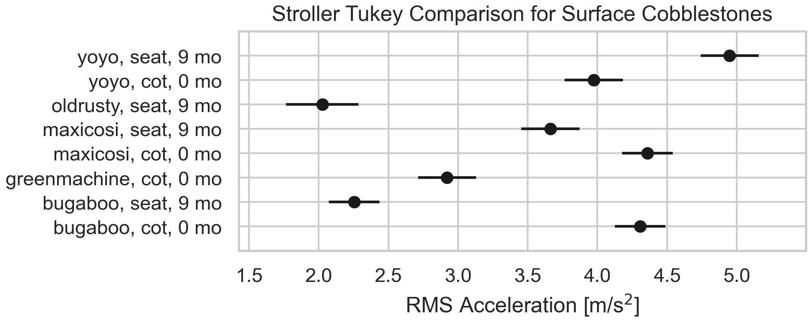
| group1 | group2 | meandiff | p-adj | lower | upper | reject |
|---|---|---|---|---|---|---|
| bugaboo, cot, 0 mo | bugaboo, seat, 9 mo | -1.2736 | 0.492 | -3.5541 | 1.0069 | False |
| bugaboo, cot, 0 mo | greenmachine, cot, 0 mo | -0.2018 | 1.0 | -2.7 | 2.2964 | False |
| bugaboo, cot, 0 mo | maxicosi, cot, 0 mo | 0.1392 | 1.0 | -2.1413 | 2.4197 | False |
| bugaboo, cot, 0 mo | maxicosi, seat, 9 mo | -0.4064 | 0.9981 | -2.9045 | 2.0918 | False |
| bugaboo, cot, 0 mo | oldrusty, seat, 9 mo | -1.3035 | 0.5656 | -3.8017 | 1.1947 | False |
| bugaboo, cot, 0 mo | yoyo, cot, 0 mo | -0.1234 | 1.0 | -2.4039 | 2.1572 | False |
| bugaboo, cot, 0 mo | yoyo, seat, 9 mo | 0.0065 | 1.0 | -2.4917 | 2.5047 | False |
| bugaboo, seat, 9 mo | greenmachine, cot, 0 mo | 1.0718 | 0.6722 | -1.2087 | 3.3523 | False |
| bugaboo, seat, 9 mo | maxicosi, cot, 0 mo | 1.4128 | 0.2687 | -0.627 | 3.4526 | False |
| bugaboo, seat, 9 mo | maxicosi, seat, 9 mo | 0.8672 | 0.8407 | -1.4133 | 3.1478 | False |
| bugaboo, seat, 9 mo | oldrusty, seat, 9 mo | -0.0299 | 1.0 | -2.3104 | 2.2506 | False |
| bugaboo, seat, 9 mo | yoyo, cot, 0 mo | 1.1502 | 0.4814 | -0.8895 | 3.19 | False |
| bugaboo, seat, 9 mo | yoyo, seat, 9 mo | 1.2801 | 0.4864 | -1.0004 | 3.5606 | False |
| greenmachine, cot, 0 mo | maxicosi, cot, 0 mo | 0.341 | 0.9989 | -1.9395 | 2.6215 | False |
| greenmachine, cot, 0 mo | maxicosi, seat, 9 mo | -0.2046 | 1.0 | -2.7028 | 2.2936 | False |
| greenmachine, cot, 0 mo | oldrusty, seat, 9 mo | -1.1017 | 0.7305 | -3.5999 | 1.3965 | False |
| greenmachine, cot, 0 mo | yoyo, cot, 0 mo | 0.0784 | 1.0 | -2.2021 | 2.3589 | False |
| greenmachine, cot, 0 mo | yoyo, seat, 9 mo | 0.2083 | 1.0 | -2.2899 | 2.7065 | False |
| maxicosi, cot, 0 mo | maxicosi, seat, 9 mo | -0.5456 | 0.9822 | -2.8261 | 1.735 | False |
| maxicosi, cot, 0 mo | oldrusty, seat, 9 mo | -1.4427 | 0.3579 | -3.7232 | 0.8378 | False |
| maxicosi, cot, 0 mo | yoyo, cot, 0 mo | -0.2626 | 0.9996 | -2.3023 | 1.7772 | False |
| maxicosi, cot, 0 mo | yoyo, seat, 9 mo | -0.1327 | 1.0 | -2.4132 | 2.1478 | False |
| maxicosi, seat, 9 mo | oldrusty, seat, 9 mo | -0.8971 | 0.8732 | -3.3953 | 1.601 | False |
| maxicosi, seat, 9 mo | yoyo, cot, 0 mo | 0.283 | 0.9997 | -1.9975 | 2.5635 | False |
| maxicosi, seat, 9 mo | yoyo, seat, 9 mo | 0.4129 | 0.998 | -2.0853 | 2.9111 | False |
| oldrusty, seat, 9 mo | yoyo, cot, 0 mo | 1.1801 | 0.5744 | -1.1004 | 3.4607 | False |
| oldrusty, seat, 9 mo | yoyo, seat, 9 mo | 1.31 | 0.5602 | -1.1882 | 3.8082 | False |
| yoyo, cot, 0 mo | yoyo, seat, 9 mo | 0.1299 | 1.0 | -2.1506 | 2.4104 | False |

| group1 | group2 | meandiff | p-adj | lower | upper | reject |
|---|---|---|---|---|---|---|
| bugaboo, cot, 0 mo | bugaboo, seat, 9 mo | -0.1973 | 0.0982 | -0.425 | 0.0304 | False |
| bugaboo, cot, 0 mo | greenmachine, cot, 0 mo | -0.2693 | 0.0204 | -0.497 | -0.0416 | True |
| bugaboo, cot, 0 mo | maxicosi, cot, 0 mo | 0.1233 | 0.4617 | -0.1044 | 0.3511 | False |
| bugaboo, cot, 0 mo | maxicosi, seat, 9 mo | 0.0903 | 0.756 | -0.1374 | 0.3181 | False |
| bugaboo, cot, 0 mo | oldrusty, seat, 9 mo | -0.0869 | 0.7856 | -0.3146 | 0.1408 | False |
| bugaboo, cot, 0 mo | yoyo, cot, 0 mo | -0.0613 | 0.9479 | -0.2891 | 0.1664 | False |
| bugaboo, cot, 0 mo | yoyo, seat, 9 mo | -0.2167 | 0.0638 | -0.4444 | 0.011 | False |
| bugaboo, seat, 9 mo | greenmachine, cot, 0 mo | -0.072 | 0.8944 | -0.2997 | 0.1558 | False |
| bugaboo, seat, 9 mo | maxicosi, cot, 0 mo | 0.3207 | 0.0072 | 0.0929 | 0.5484 | True |
| bugaboo, seat, 9 mo | maxicosi, seat, 9 mo | 0.2877 | 0.0139 | 0.06 | 0.5154 | True |
| bugaboo, seat, 9 mo | oldrusty, seat, 9 mo | 0.1105 | 0.5738 | -0.1173 | 0.3382 | False |
| bugaboo, seat, 9 mo | yoyo, cot, 0 mo | 0.136 | 0.3645 | -0.0917 | 0.3637 | False |
| bugaboo, seat, 9 mo | yoyo, seat, 9 mo | -0.0194 | 0.9999 | -0.2471 | 0.2083 | False |
| greenmachine, cot, 0 mo | maxicosi, cot, 0 mo | 0.3926 | 0.0019 | 0.1649 | 0.6203 | True |
| greenmachine, cot, 0 mo | maxicosi, seat, 9 mo | 0.3596 | 0.0035 | 0.1319 | 0.5873 | True |
| greenmachine, cot, 0 mo | oldrusty, seat, 9 mo | 0.1824 | 0.1367 | -0.0453 | 0.4101 | False |
| greenmachine, cot, 0 mo | yoyo, cot, 0 mo | 0.2079 | 0.0775 | -0.0198 | 0.4357 | False |
| greenmachine, cot, 0 mo | yoyo, seat, 9 mo | 0.0526 | 0.9758 | -0.1752 | 0.2803 | False |
| maxicosi, cot, 0 mo | maxicosi, seat, 9 mo | -0.033 | 0.9983 | -0.2607 | 0.1947 | False |
| maxicosi, cot, 0 mo | oldrusty, seat, 9 mo | -0.2102 | 0.0737 | -0.4379 | 0.0175 | False |
| maxicosi, cot, 0 mo | yoyo, cot, 0 mo | -0.1847 | 0.13 | -0.4124 | 0.043 | False |
| maxicosi, cot, 0 mo | yoyo, seat, 9 mo | -0.3401 | 0.005 | -0.5678 | -0.1123 | True |
| maxicosi, seat, 9 mo | oldrusty, seat, 9 mo | -0.1772 | 0.1533 | -0.4049 | 0.0505 | False |
| maxicosi, seat, 9 mo | yoyo, cot, 0 mo | -0.1517 | 0.2654 | -0.3794 | 0.076 | False |
| maxicosi, seat, 9 mo | yoyo, seat, 9 mo | -0.3071 | 0.0094 | -0.5348 | -0.0793 | True |
| oldrusty, seat, 9 mo | yoyo, cot, 0 mo | 0.0255 | 0.9997 | -0.2022 | 0.2532 | False |
| oldrusty, seat, 9 mo | yoyo, seat, 9 mo | -0.1298 | 0.4098 | -0.3576 | 0.0979 | False |
| yoyo, cot, 0 mo | yoyo, seat, 9 mo | -0.1554 | 0.2457 | -0.3831 | 0.0723 | False |
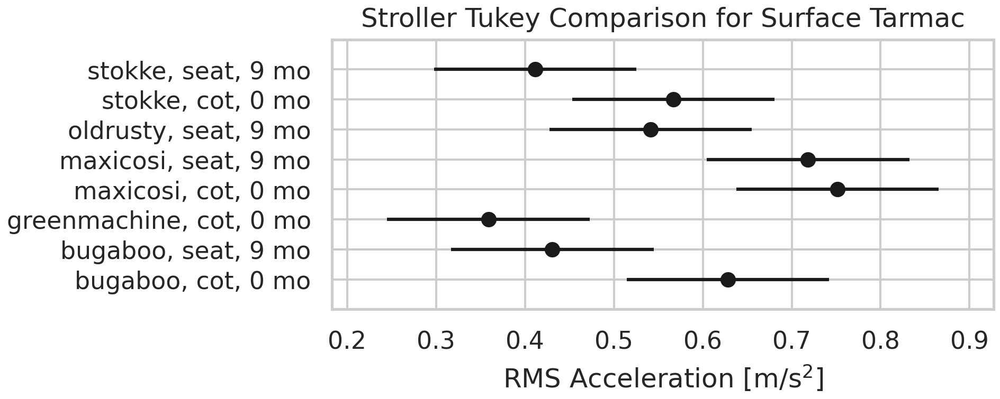
| Dep. Variable: | SeatBotacc_ver_rms_iso | R-squared: | 0.925 |
|---|---|---|---|
| Model: | OLS | Adj. R-squared: | 0.910 |
| Method: | Least Squares | F-statistic: | 63.17 |
| Date: | di, 28 jan 2025 | Prob (F-statistic): | 1.33e-20 |
| Time: | 07:33:09 | Log-Likelihood: | -56.568 |
| No. Observations: | 50 | AIC: | 131.1 |
| Df Residuals: | 41 | BIC: | 148.3 |
| Df Model: | 8 | ||
| Covariance Type: | nonrobust |
| coef | std err | t | P>|t| | [0.025 | 0.975] | |
|---|---|---|---|---|---|---|
| Intercept | 0.8067 | 0.643 | 1.255 | 0.216 | -0.491 | 2.104 |
| C(Q('Road Surface'), Treatment('Tarmac'))[T.Paver Bricks] | 1.2956 | 0.889 | 1.457 | 0.153 | -0.500 | 3.091 |
| C(Q('Vehicle, Seat, Baby Age'), Treatment('keiler, maxicosi, 3 mo'))[T.keiler, maxicosi, 0 mo] | 0.8664 | 0.415 | 2.085 | 0.043 | 0.027 | 1.705 |
| C(Q('Vehicle, Seat, Baby Age'), Treatment('keiler, maxicosi, 3 mo'))[T.keiler, melia, 3 mo] | -0.5060 | 0.415 | -1.219 | 0.230 | -1.344 | 0.332 |
| C(Q('Vehicle, Seat, Baby Age'), Treatment('keiler, maxicosi, 3 mo'))[T.urbanarrow, maxicosi, 0 mo] | -0.0512 | 0.404 | -0.127 | 0.900 | -0.867 | 0.764 |
| C(Q('Vehicle, Seat, Baby Age'), Treatment('keiler, maxicosi, 3 mo'))[T.urbanarrow, maxicosi, 3 mo] | -0.8895 | 0.415 | -2.141 | 0.038 | -1.728 | -0.051 |
| C(Q('Vehicle, Seat, Baby Age'), Treatment('keiler, maxicosi, 3 mo'))[T.urbanarrow, melia, 3 mo] | -1.1357 | 0.403 | -2.819 | 0.007 | -1.949 | -0.322 |
| Q('Mean Speed [m/s]') | 0.2034 | 0.116 | 1.747 | 0.088 | -0.032 | 0.439 |
| Q('Mean Speed [m/s]'):C(Q('Road Surface'), Treatment('Tarmac'))[T.Paver Bricks] | 0.7803 | 0.180 | 4.338 | 0.000 | 0.417 | 1.144 |
| Omnibus: | 1.195 | Durbin-Watson: | 2.235 |
|---|---|---|---|
| Prob(Omnibus): | 0.550 | Jarque-Bera (JB): | 0.603 |
| Skew: | -0.244 | Prob(JB): | 0.740 |
| Kurtosis: | 3.228 | Cond. No. | 49.3 |
| group1 | group2 | meandiff | p-adj | lower | upper | reject |
|---|---|---|---|---|---|---|
| keiler, maxicosi, 0 mo | keiler, maxicosi, 3 mo | -0.2759 | 0.8403 | -1.1395 | 0.5876 | False |
| keiler, maxicosi, 0 mo | keiler, melia, 3 mo | -0.6067 | 0.2103 | -1.4702 | 0.2569 | False |
| keiler, maxicosi, 0 mo | urbanarrow, maxicosi, 0 mo | -0.6677 | 0.1504 | -1.5312 | 0.1958 | False |
| keiler, maxicosi, 0 mo | urbanarrow, maxicosi, 3 mo | -0.8413 | 0.0567 | -1.7048 | 0.0223 | False |
| keiler, maxicosi, 0 mo | urbanarrow, melia, 3 mo | -0.9603 | 0.0159 | -1.7326 | -0.1879 | True |
| keiler, maxicosi, 3 mo | keiler, melia, 3 mo | -0.3307 | 0.7894 | -1.2767 | 0.6152 | False |
| keiler, maxicosi, 3 mo | urbanarrow, maxicosi, 0 mo | -0.3917 | 0.667 | -1.3377 | 0.5542 | False |
| keiler, maxicosi, 3 mo | urbanarrow, maxicosi, 3 mo | -0.5653 | 0.3375 | -1.5113 | 0.3806 | False |
| keiler, maxicosi, 3 mo | urbanarrow, melia, 3 mo | -0.6843 | 0.1371 | -1.5479 | 0.1792 | False |
| keiler, melia, 3 mo | urbanarrow, maxicosi, 0 mo | -0.061 | 0.9999 | -1.007 | 0.8849 | False |
| keiler, melia, 3 mo | urbanarrow, maxicosi, 3 mo | -0.2346 | 0.9344 | -1.1805 | 0.7114 | False |
| keiler, melia, 3 mo | urbanarrow, melia, 3 mo | -0.3536 | 0.6761 | -1.2171 | 0.5099 | False |
| urbanarrow, maxicosi, 0 mo | urbanarrow, maxicosi, 3 mo | -0.1736 | 0.9806 | -1.1195 | 0.7724 | False |
| urbanarrow, maxicosi, 0 mo | urbanarrow, melia, 3 mo | -0.2926 | 0.8083 | -1.1561 | 0.5709 | False |
| urbanarrow, maxicosi, 3 mo | urbanarrow, melia, 3 mo | -0.119 | 0.9946 | -0.9825 | 0.7445 | False |
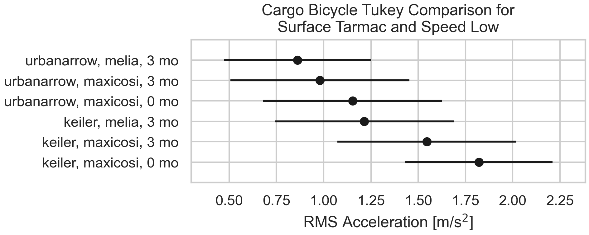
| group1 | group2 | meandiff | p-adj | lower | upper | reject |
|---|---|---|---|---|---|---|
| keiler, maxicosi, 0 mo | keiler, maxicosi, 3 mo | -0.6764 | 0.143 | -1.5671 | 0.2144 | False |
| keiler, maxicosi, 0 mo | keiler, melia, 3 mo | -1.2254 | 0.0116 | -2.1161 | -0.3346 | True |
| keiler, maxicosi, 0 mo | urbanarrow, maxicosi, 0 mo | -0.8974 | 0.0485 | -1.7881 | -0.0066 | True |
| keiler, maxicosi, 0 mo | urbanarrow, maxicosi, 3 mo | -1.298 | 0.0087 | -2.1888 | -0.4073 | True |
| keiler, maxicosi, 0 mo | urbanarrow, melia, 3 mo | -1.5066 | 0.004 | -2.3973 | -0.6158 | True |
| keiler, maxicosi, 3 mo | keiler, melia, 3 mo | -0.549 | 0.2697 | -1.4397 | 0.3418 | False |
| keiler, maxicosi, 3 mo | urbanarrow, maxicosi, 0 mo | -0.221 | 0.9066 | -1.1117 | 0.6698 | False |
| keiler, maxicosi, 3 mo | urbanarrow, maxicosi, 3 mo | -0.6217 | 0.1881 | -1.5124 | 0.2691 | False |
| keiler, maxicosi, 3 mo | urbanarrow, melia, 3 mo | -0.8302 | 0.0668 | -1.7209 | 0.0606 | False |
| keiler, melia, 3 mo | urbanarrow, maxicosi, 0 mo | 0.328 | 0.6949 | -0.5628 | 1.2188 | False |
| keiler, melia, 3 mo | urbanarrow, maxicosi, 3 mo | -0.0727 | 0.9992 | -0.9634 | 0.8181 | False |
| keiler, melia, 3 mo | urbanarrow, melia, 3 mo | -0.2812 | 0.7978 | -1.172 | 0.6095 | False |
| urbanarrow, maxicosi, 0 mo | urbanarrow, maxicosi, 3 mo | -0.4007 | 0.5309 | -1.2914 | 0.4901 | False |
| urbanarrow, maxicosi, 0 mo | urbanarrow, melia, 3 mo | -0.6092 | 0.2002 | -1.5 | 0.2816 | False |
| urbanarrow, maxicosi, 3 mo | urbanarrow, melia, 3 mo | -0.2085 | 0.9241 | -1.0993 | 0.6822 | False |
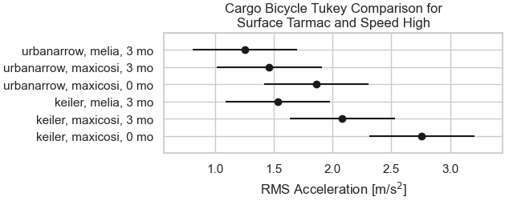
| group1 | group2 | meandiff | p-adj | lower | upper | reject |
|---|---|---|---|---|---|---|
| keiler, maxicosi, 0 mo | keiler, maxicosi, 3 mo | -1.1964 | 0.9288 | -6.1168 | 3.7239 | False |
| keiler, maxicosi, 0 mo | keiler, melia, 3 mo | -1.9845 | 0.6604 | -6.9049 | 2.9358 | False |
| keiler, maxicosi, 0 mo | urbanarrow, maxicosi, 0 mo | -1.1987 | 0.9003 | -5.6904 | 3.293 | False |
| keiler, maxicosi, 0 mo | urbanarrow, maxicosi, 3 mo | -2.9994 | 0.3011 | -7.9198 | 1.921 | False |
| keiler, maxicosi, 0 mo | urbanarrow, melia, 3 mo | -2.7654 | 0.3689 | -7.6858 | 2.155 | False |
| keiler, maxicosi, 3 mo | keiler, melia, 3 mo | -0.7881 | 0.987 | -5.7085 | 4.1323 | False |
| keiler, maxicosi, 3 mo | urbanarrow, maxicosi, 0 mo | -0.0022 | 1.0 | -4.4939 | 4.4894 | False |
| keiler, maxicosi, 3 mo | urbanarrow, maxicosi, 3 mo | -1.803 | 0.7334 | -6.7234 | 3.1174 | False |
| keiler, maxicosi, 3 mo | urbanarrow, melia, 3 mo | -1.569 | 0.821 | -6.4894 | 3.3514 | False |
| keiler, melia, 3 mo | urbanarrow, maxicosi, 0 mo | 0.7859 | 0.9809 | -3.7058 | 5.2775 | False |
| keiler, melia, 3 mo | urbanarrow, maxicosi, 3 mo | -1.0149 | 0.9623 | -5.9353 | 3.9055 | False |
| keiler, melia, 3 mo | urbanarrow, melia, 3 mo | -0.7809 | 0.9875 | -5.7013 | 4.1395 | False |
| urbanarrow, maxicosi, 0 mo | urbanarrow, maxicosi, 3 mo | -1.8007 | 0.6653 | -6.2924 | 2.691 | False |
| urbanarrow, maxicosi, 0 mo | urbanarrow, melia, 3 mo | -1.5667 | 0.7671 | -6.0584 | 2.925 | False |
| urbanarrow, maxicosi, 3 mo | urbanarrow, melia, 3 mo | 0.234 | 1.0 | -4.6864 | 5.1544 | False |

| group1 | group2 | meandiff | p-adj | lower | upper | reject |
|---|---|---|---|---|---|---|
| keiler, maxicosi, 0 mo | keiler, maxicosi, 3 mo | -2.8807 | 0.0666 | -5.992 | 0.2306 | False |
| keiler, maxicosi, 0 mo | keiler, melia, 3 mo | -3.9547 | 0.0191 | -7.066 | -0.8434 | True |
| keiler, maxicosi, 0 mo | urbanarrow, maxicosi, 0 mo | -2.3282 | 0.1379 | -5.4395 | 0.7831 | False |
| keiler, maxicosi, 0 mo | urbanarrow, maxicosi, 3 mo | -3.1628 | 0.047 | -6.2741 | -0.0515 | True |
| keiler, maxicosi, 0 mo | urbanarrow, melia, 3 mo | -4.1736 | 0.0152 | -7.2849 | -1.0623 | True |
| keiler, maxicosi, 3 mo | keiler, melia, 3 mo | -1.074 | 0.5333 | -3.6144 | 1.4663 | False |
| keiler, maxicosi, 3 mo | urbanarrow, maxicosi, 0 mo | 0.5524 | 0.9231 | -1.9879 | 3.0928 | False |
| keiler, maxicosi, 3 mo | urbanarrow, maxicosi, 3 mo | -0.2822 | 0.9952 | -2.8225 | 2.2582 | False |
| keiler, maxicosi, 3 mo | urbanarrow, melia, 3 mo | -1.2929 | 0.3806 | -3.8333 | 1.2474 | False |
| keiler, melia, 3 mo | urbanarrow, maxicosi, 0 mo | 1.6265 | 0.2186 | -0.9139 | 4.1668 | False |
| keiler, melia, 3 mo | urbanarrow, maxicosi, 3 mo | 0.7919 | 0.7627 | -1.7485 | 3.3323 | False |
| keiler, melia, 3 mo | urbanarrow, melia, 3 mo | -0.2189 | 0.9985 | -2.7593 | 2.3215 | False |
| urbanarrow, maxicosi, 0 mo | urbanarrow, maxicosi, 3 mo | -0.8346 | 0.7282 | -3.3749 | 1.7058 | False |
| urbanarrow, maxicosi, 0 mo | urbanarrow, melia, 3 mo | -1.8454 | 0.1513 | -4.3857 | 0.695 | False |
| urbanarrow, maxicosi, 3 mo | urbanarrow, melia, 3 mo | -1.0108 | 0.5834 | -3.5512 | 1.5296 | False |

Scatter plot of the ISO 2631-1 Weighted RMS SeatBotacc_ver of all trials broken down by vehicle setup (brand, seat configuration, baby age), trial duration, road surface, and plotted versus speed. Black horizontal line indicate "above the health caution zone" from the ISO 2631-1 standard for different durations of daily dosage.

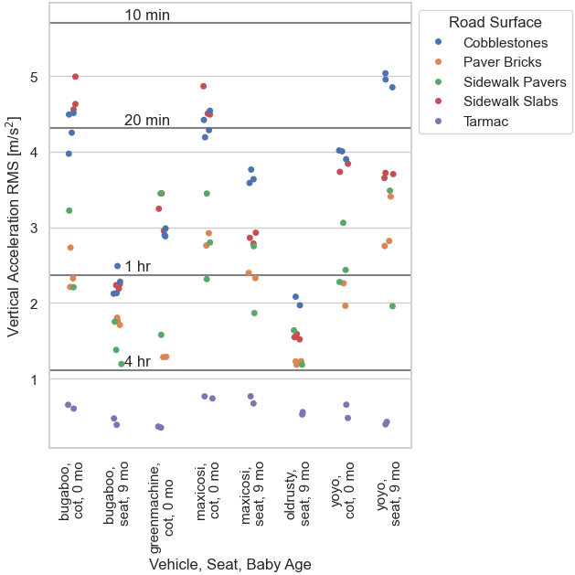
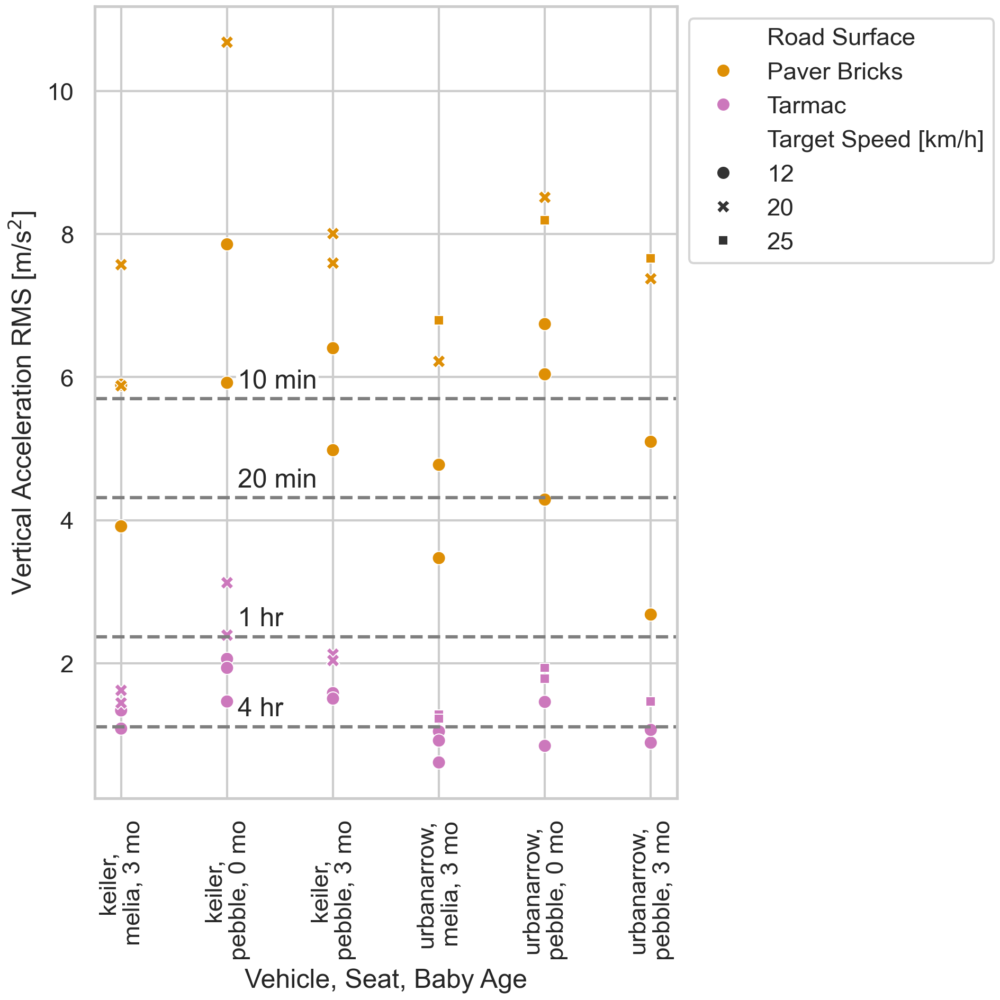
Scatter plot of the ISO 2631-1 Weighted RMS SeatBotacc magnitude of all trials broken down by vehicle setup (brand, seat configuration, baby age), trial duration, road surface, and plotted versus speed. Horizontal lines indicate the ISO 2631-1 comfort labels.
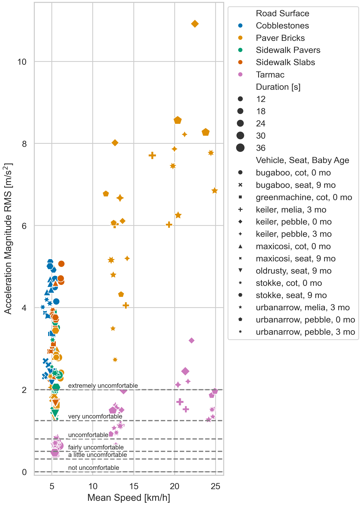
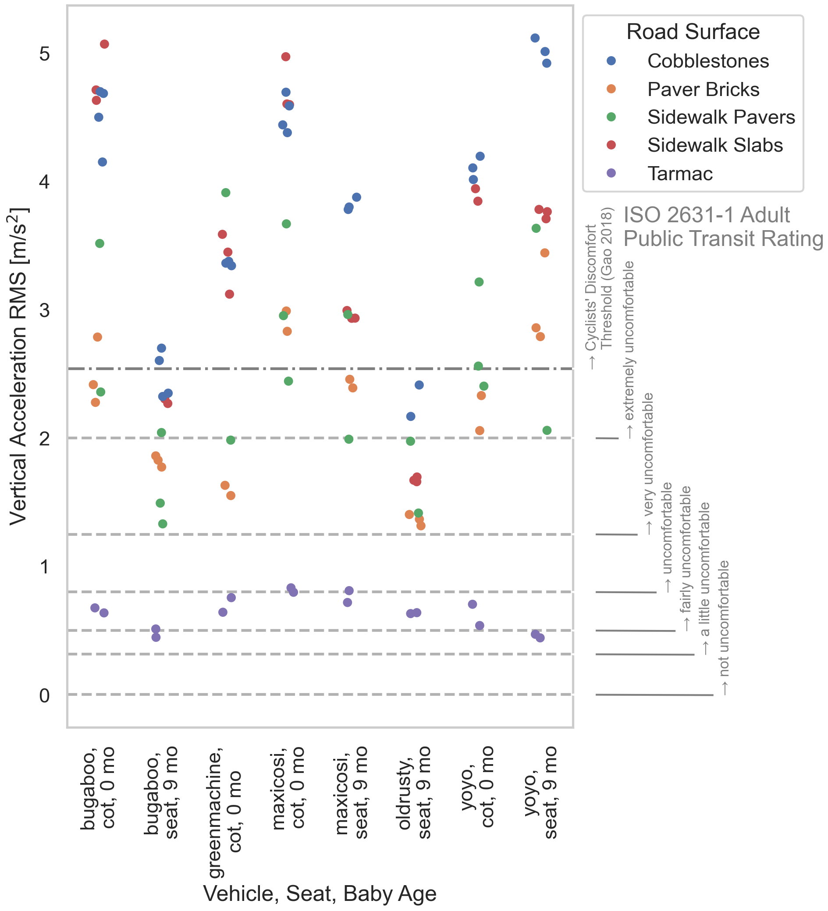
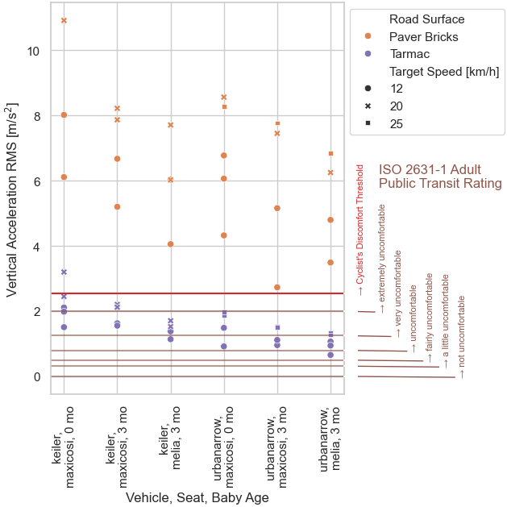
Scatter plot of the crest factors of the unweighted SeatBotacc_ver of all trials broken down by vehicle setup (brand, seat configuration, baby age), trial duration, road surface, and plotted versus speed.
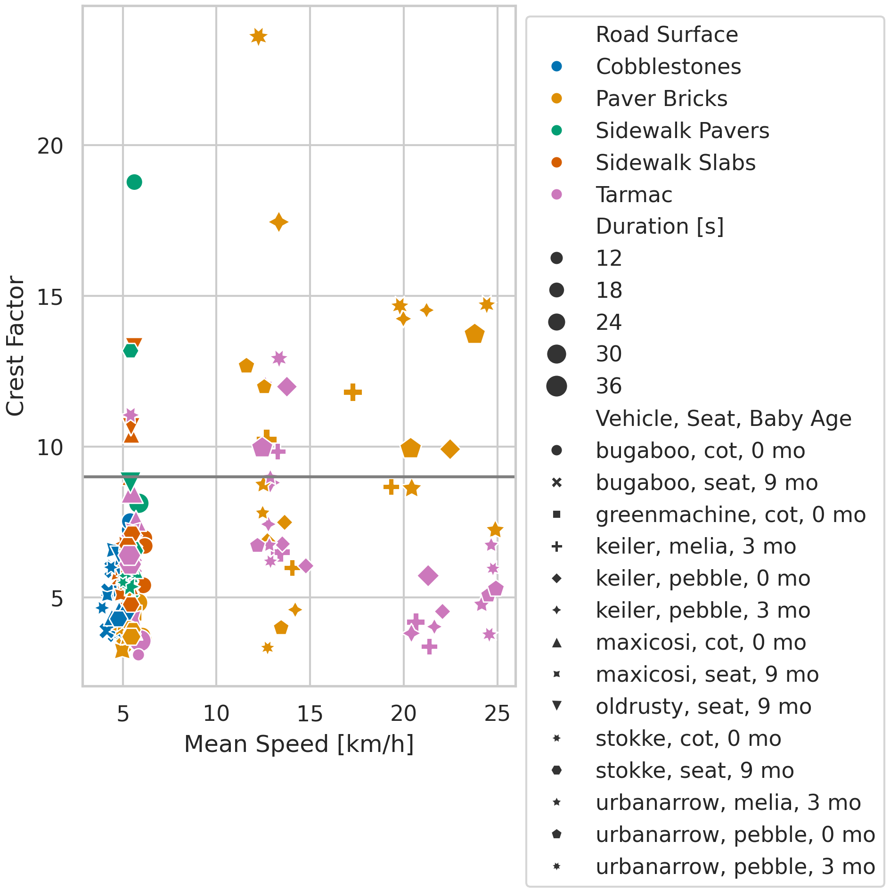

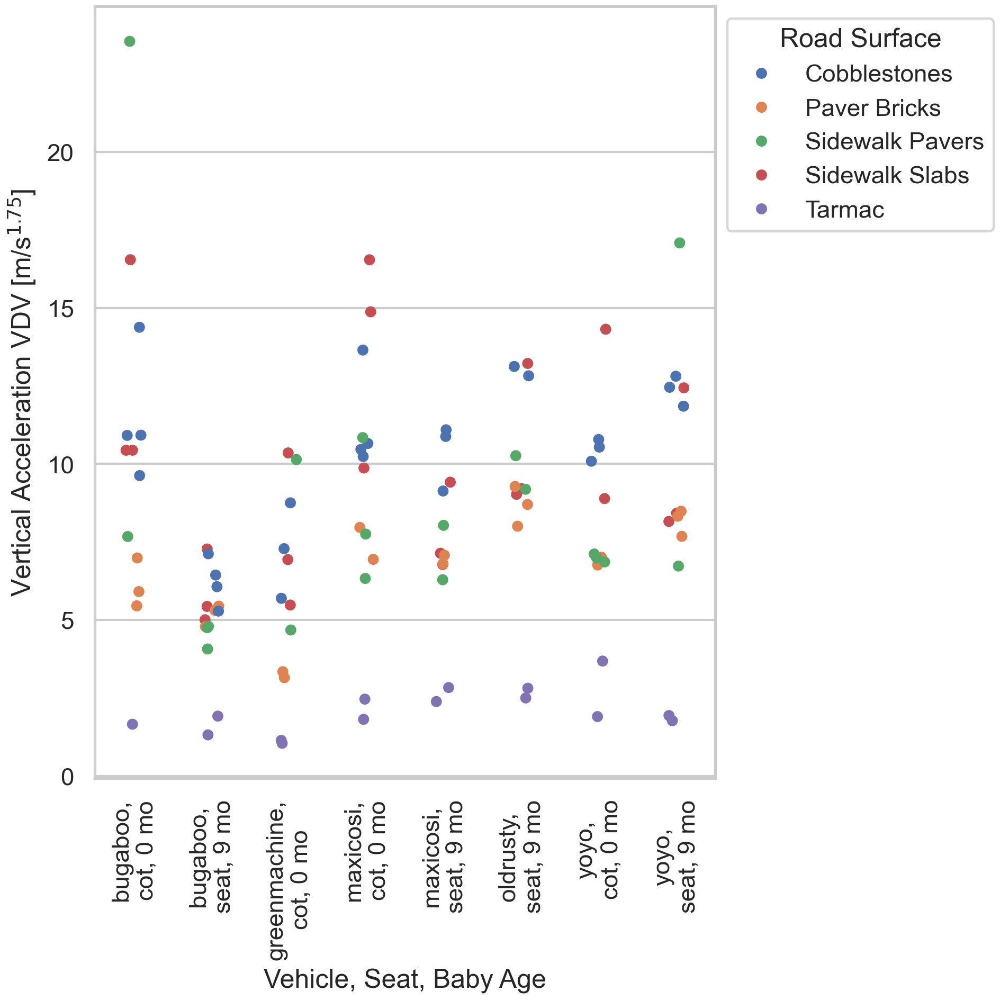
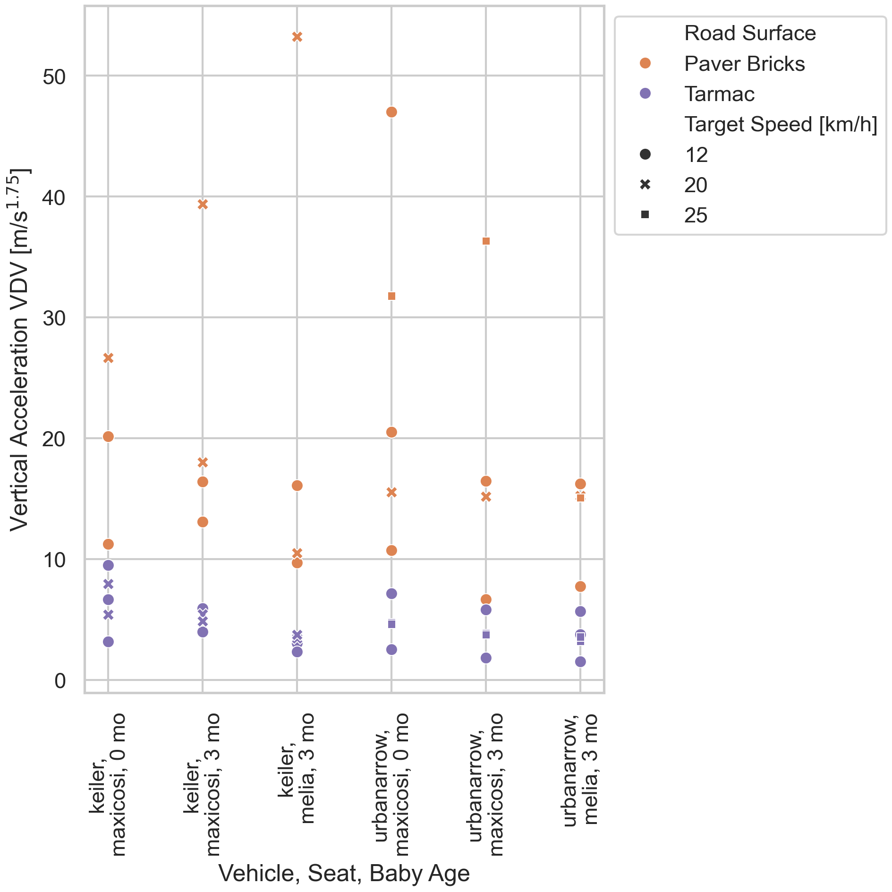


How does vibration vary across speed for the cargo bicycles? This plot shows a linear regression of ISO weighted SeatBotacc_ver versus speed for both asphalt and paver bricks. The shaded regions represent the 95% confidence intervals.

Do vehicles differ in each surface-speed scenario?

Compare baby age for each stroller on each tested surface.

Compare the baby seats used in the cargo bicycles for each bicycle and road surface type.

Compare accelerations across baby mass (age) and speed.


This section shows how the sessions are segmented into trials.


missing bounds, skipped: session014


missing bounds, skipped: session017


This lists all of the trials in long form (tidy data).
| SeatBotacc_ver_rms | SeatBotacc_ver_rms_iso | SeatBotacc_rms_mag_iso | SeatBotacc_ver_vdv | Crest Factor | Duration [s] | Mean Speed [m/s] | STD DEV of Speed [m/s] | Max Spectrum Amp [m/s/s] | Peak Frequency [Hz] | Threshold Frequency [Hz] | Baby Age [mo] | Baby Mass [kg] | Seat | Session | Road Surface | Trial Repetition | Vehicle | Vehicle Type | repetition_number | duration_weight | Target Speed [km/h] | Vehicle, Seat, Baby Age | Seat, Baby | Mean Speed [km/h] | |
|---|---|---|---|---|---|---|---|---|---|---|---|---|---|---|---|---|---|---|---|---|---|---|---|---|---|
| 0 | 4.768651 | 4.492928 | 4.602627 | 8.439793 | 10.400339 | 20.970184 | 1.516615 | 0.124630 | 0.370500 | 5.224609 | 19.726562 | 0 | 3.48 | cot | 001 | Sidewalk Slabs | 0 | maxicosi | stroller | 0 | 0.525810 | 5 | maxicosi, cot, 0 mo | cot, 0 mo | 5.459815 |
| 1 | 4.774659 | 4.504867 | 4.597463 | 7.493755 | 5.344166 | 15.992615 | 1.514554 | 0.090208 | 0.500370 | 5.175781 | 20.751953 | 0 | 3.48 | cot | 001 | Sidewalk Slabs | 1 | maxicosi | stroller | 0 | 0.401001 | 5 | maxicosi, cot, 0 mo | cot, 0 mo | 5.452395 |
| 2 | 5.318989 | 4.866960 | 4.970634 | 9.251122 | 8.934642 | 11.804626 | 1.472092 | 0.107734 | 0.519258 | 4.980469 | 21.728516 | 0 | 3.48 | cot | 001 | Sidewalk Slabs | 2 | maxicosi | stroller | 0 | 0.295991 | 5 | maxicosi, cot, 0 mo | cot, 0 mo | 5.299532 |
| 3 | 4.117263 | 3.841280 | 3.942351 | 6.700520 | 6.049049 | 25.307007 | 1.422519 | 0.173129 | 0.373964 | 5.151367 | 20.190430 | 0 | 3.48 | cot | 002 | Sidewalk Slabs | 0 | yoyo | stroller | 0 | 0.634552 | 5 | yoyo, cot, 0 mo | cot, 0 mo | 5.121069 |
| 4 | 3.951186 | 3.734039 | 3.844955 | 6.635685 | 6.789528 | 26.133178 | 1.398715 | 0.136864 | 0.362091 | 5.151367 | 18.994141 | 0 | 3.48 | cot | 002 | Sidewalk Slabs | 1 | yoyo | stroller | 0 | 0.655267 | 5 | yoyo, cot, 0 mo | cot, 0 mo | 5.035374 |
| 5 | 3.116197 | 2.260708 | 2.330413 | 4.182423 | 3.946826 | 19.999817 | 1.341308 | 0.120590 | 0.270334 | 9.228516 | 42.236328 | 0 | 3.48 | cot | 003 | Paver Bricks | 0 | yoyo | stroller | 0 | 0.501478 | 5 | yoyo, cot, 0 mo | cot, 0 mo | 4.828710 |
| 6 | 2.828818 | 1.962582 | 2.057342 | 3.815972 | 4.188451 | 39.090851 | 1.386470 | 0.063378 | 0.201196 | 9.667969 | 41.259766 | 0 | 3.48 | cot | 003 | Paver Bricks | 0 | yoyo | stroller | 1 | 0.980170 | 5 | yoyo, cot, 0 mo | cot, 0 mo | 4.991292 |
| 7 | 4.045688 | 3.901023 | 4.013598 | 5.475588 | 4.657183 | 19.999817 | 1.083166 | 0.232569 | 0.586645 | 6.445312 | 16.992188 | 0 | 3.48 | cot | 003 | Cobblestones | 0 | yoyo | stroller | 0 | 0.501478 | 5 | yoyo, cot, 0 mo | cot, 0 mo | 3.899396 |
| 8 | 4.174176 | 4.016705 | 4.195187 | 5.875549 | 6.005064 | 19.999542 | 1.215290 | 0.151624 | 0.520966 | 6.347656 | 16.259766 | 0 | 3.48 | cot | 003 | Cobblestones | 0 | yoyo | stroller | 1 | 0.501471 | 5 | yoyo, cot, 0 mo | cot, 0 mo | 4.375043 |
| 9 | 4.175489 | 4.005502 | 4.104382 | 5.626264 | 3.864969 | 23.873291 | 1.322458 | 0.228527 | 0.320204 | 6.542969 | 17.529297 | 0 | 3.48 | cot | 003 | Cobblestones | 0 | yoyo | stroller | 2 | 0.598602 | 5 | yoyo, cot, 0 mo | cot, 0 mo | 4.760849 |
| 10 | 3.274796 | 3.059834 | 3.215532 | 5.022760 | 5.708117 | 19.999817 | 1.416745 | 0.137991 | 0.440935 | 5.712891 | 18.994141 | 0 | 3.48 | cot | 003 | Sidewalk Pavers | 0 | yoyo | stroller | 0 | 0.501478 | 5 | yoyo, cot, 0 mo | cot, 0 mo | 5.100282 |
| 11 | 2.393189 | 2.278037 | 2.403788 | 3.562300 | 5.360636 | 33.497742 | 1.491499 | 0.114993 | 0.235055 | 7.177734 | 19.238281 | 0 | 3.48 | cot | 003 | Sidewalk Pavers | 0 | yoyo | stroller | 1 | 0.839927 | 5 | yoyo, cot, 0 mo | cot, 0 mo | 5.369396 |
| 12 | 2.588658 | 2.437083 | 2.560192 | 3.867299 | 5.500905 | 13.055817 | 1.391087 | 0.092377 | 0.297527 | 7.275391 | 18.261719 | 0 | 3.48 | cot | 003 | Sidewalk Pavers | 1 | yoyo | stroller | 0 | 0.327363 | 5 | yoyo, cot, 0 mo | cot, 0 mo | 5.007912 |
| 13 | 0.941019 | 0.655084 | 0.704185 | 1.692096 | 11.052120 | 27.065613 | 1.505679 | 0.039159 | 0.068624 | 7.739258 | 39.965820 | 0 | 3.48 | cot | 003 | Tarmac | 0 | yoyo | stroller | 0 | 0.678647 | 5 | yoyo, cot, 0 mo | cot, 0 mo | 5.420445 |
| 14 | 0.789741 | 0.478412 | 0.538493 | 1.061613 | 3.727022 | 12.029999 | 1.457826 | 0.042341 | 0.044245 | 7.666016 | 45.751953 | 0 | 3.48 | cot | 003 | Tarmac | 1 | yoyo | stroller | 0 | 0.301642 | 5 | yoyo, cot, 0 mo | cot, 0 mo | 5.248175 |
| 15 | 3.298049 | 2.922715 | 2.989277 | 4.272176 | 3.870240 | 20.000000 | 1.559491 | 0.047409 | 0.410373 | 10.498047 | 21.240234 | 0 | 3.48 | cot | 004 | Paver Bricks | 0 | maxicosi | stroller | 0 | 0.501483 | 5 | maxicosi, cot, 0 mo | cot, 0 mo | 5.614167 |
| 16 | 3.158707 | 2.760040 | 2.831016 | 4.169692 | 3.975804 | 34.322662 | 1.517700 | 0.050519 | 0.297818 | 10.351562 | 20.947266 | 0 | 3.48 | cot | 004 | Paver Bricks | 0 | maxicosi | stroller | 1 | 0.860612 | 5 | maxicosi, cot, 0 mo | cot, 0 mo | 5.463720 |
| 17 | 4.836943 | 4.542681 | 4.694042 | 6.835493 | 4.591634 | 20.000000 | 1.335911 | 0.151513 | 0.545500 | 8.496094 | 18.261719 | 0 | 3.48 | cot | 004 | Cobblestones | 0 | maxicosi | stroller | 0 | 0.501483 | 5 | maxicosi, cot, 0 mo | cot, 0 mo | 4.809280 |
| 18 | 4.415119 | 4.191332 | 4.378988 | 6.208654 | 4.343373 | 19.999786 | 1.228077 | 0.211621 | 0.507407 | 7.080078 | 18.212891 | 0 | 3.48 | cot | 004 | Cobblestones | 0 | maxicosi | stroller | 1 | 0.501478 | 5 | maxicosi, cot, 0 mo | cot, 0 mo | 4.421077 |
| 19 | 4.507839 | 4.285449 | 4.439655 | 6.018723 | 4.376050 | 19.999817 | 1.366545 | 0.157348 | 0.508665 | 7.470703 | 18.066406 | 0 | 3.48 | cot | 004 | Cobblestones | 0 | maxicosi | stroller | 2 | 0.501478 | 5 | maxicosi, cot, 0 mo | cot, 0 mo | 4.919561 |
| 20 | 4.677562 | 4.420395 | 4.587441 | 6.603963 | 6.234134 | 22.968292 | 1.351296 | 0.140338 | 0.296458 | 9.350586 | 18.481445 | 0 | 3.48 | cot | 004 | Cobblestones | 0 | maxicosi | stroller | 3 | 0.575910 | 5 | maxicosi, cot, 0 mo | cot, 0 mo | 4.864666 |
| 21 | 3.604621 | 3.447624 | 3.668314 | 5.400074 | 5.771177 | 20.000000 | 1.497605 | 0.102321 | 0.480956 | 7.568359 | 17.236328 | 0 | 3.48 | cot | 004 | Sidewalk Pavers | 0 | maxicosi | stroller | 0 | 0.501483 | 5 | maxicosi, cot, 0 mo | cot, 0 mo | 5.391378 |
| 22 | 2.522962 | 2.315567 | 2.442683 | 3.970435 | 5.971907 | 31.001221 | 1.541367 | 0.080611 | 0.215968 | 7.739258 | 19.311523 | 0 | 3.48 | cot | 004 | Sidewalk Pavers | 0 | maxicosi | stroller | 1 | 0.777329 | 5 | maxicosi, cot, 0 mo | cot, 0 mo | 5.548923 |
| 23 | 2.999406 | 2.799473 | 2.953089 | 4.210590 | 4.614923 | 13.272125 | 1.480789 | 0.061912 | 0.283590 | 7.519531 | 17.675781 | 0 | 3.48 | cot | 004 | Sidewalk Pavers | 1 | maxicosi | stroller | 0 | 0.332787 | 5 | maxicosi, cot, 0 mo | cot, 0 mo | 5.330839 |
| 24 | 0.914744 | 0.764875 | 0.832235 | 1.410746 | 7.543396 | 32.026733 | 1.584690 | 0.037555 | 0.061097 | 10.571289 | 24.804688 | 0 | 3.48 | cot | 004 | Tarmac | 0 | maxicosi | stroller | 0 | 0.803043 | 5 | maxicosi, cot, 0 mo | cot, 0 mo | 5.704885 |
| 25 | 0.861145 | 0.737988 | 0.797659 | 1.427761 | 8.495052 | 36.605011 | 1.526296 | 0.031660 | 0.058651 | 8.569336 | 24.072266 | 0 | 3.48 | cot | 004 | Tarmac | 1 | maxicosi | stroller | 0 | 0.917839 | 5 | maxicosi, cot, 0 mo | cot, 0 mo | 5.494665 |
| 26 | 3.163035 | 2.929492 | 2.993011 | 4.744159 | 5.192850 | 25.187256 | 1.398962 | 0.083817 | 0.260306 | 7.153320 | 19.824219 | 9 | 8.90 | seat | 005 | Sidewalk Slabs | 0 | maxicosi | stroller | 0 | 0.631549 | 5 | maxicosi, seat, 9 mo | seat, 9 mo | 5.036262 |
| 27 | 3.074694 | 2.860862 | 2.932512 | 4.623166 | 5.784563 | 26.898926 | 1.311984 | 0.097951 | 0.253607 | 6.518555 | 19.799805 | 9 | 8.90 | seat | 005 | Sidewalk Slabs | 1 | maxicosi | stroller | 0 | 0.674468 | 5 | maxicosi, seat, 9 mo | seat, 9 mo | 4.723144 |
| 28 | 3.070581 | 2.785676 | 2.933759 | 4.673557 | 5.087803 | 24.744477 | 1.359387 | 0.070164 | 0.245492 | 6.884766 | 20.532227 | 9 | 8.90 | seat | 005 | Sidewalk Slabs | 2 | maxicosi | stroller | 0 | 0.620447 | 5 | maxicosi, seat, 9 mo | seat, 9 mo | 4.893793 |
| 29 | 2.455130 | 2.248145 | 2.324340 | 3.633864 | 5.335670 | 25.290530 | 1.407940 | 0.092740 | 0.180528 | 6.152344 | 20.996094 | 9 | 8.90 | seat | 006 | Sidewalk Slabs | 0 | bugaboo | stroller | 0 | 0.634138 | 5 | bugaboo, seat, 9 mo | seat, 9 mo | 5.068585 |
| 30 | 2.376244 | 2.190098 | 2.268706 | 3.508857 | 5.624641 | 25.744260 | 1.357840 | 0.098238 | 0.187646 | 5.737305 | 19.921875 | 9 | 8.90 | seat | 006 | Sidewalk Slabs | 1 | bugaboo | stroller | 0 | 0.645515 | 5 | bugaboo, seat, 9 mo | seat, 9 mo | 4.888223 |
| 31 | 2.433100 | 2.235478 | 2.303917 | 3.545682 | 4.922254 | 22.439580 | 1.428607 | 0.090391 | 0.168961 | 6.005859 | 19.946289 | 9 | 8.90 | seat | 006 | Sidewalk Slabs | 2 | bugaboo | stroller | 0 | 0.562653 | 5 | bugaboo, seat, 9 mo | seat, 9 mo | 5.142985 |
| 32 | 2.182672 | 1.710349 | 1.773378 | 2.800536 | 3.415100 | 19.999520 | 1.402989 | 0.054824 | 0.217096 | 8.984375 | 26.269531 | 9 | 8.90 | seat | 006 | Paver Bricks | 0 | bugaboo | stroller | 0 | 0.501471 | 5 | bugaboo, seat, 9 mo | seat, 9 mo | 5.050762 |
| 33 | 2.298465 | 1.766204 | 1.827235 | 3.023182 | 4.026170 | 19.999810 | 1.454484 | 0.041475 | 0.227560 | 9.423828 | 26.464844 | 9 | 8.90 | seat | 006 | Paver Bricks | 0 | bugaboo | stroller | 1 | 0.501478 | 5 | bugaboo, seat, 9 mo | seat, 9 mo | 5.236142 |
| 34 | 2.322498 | 1.805217 | 1.860402 | 3.160000 | 4.049740 | 27.922850 | 1.476248 | 0.055562 | 0.165705 | 9.716797 | 26.416016 | 9 | 8.90 | seat | 006 | Paver Bricks | 0 | bugaboo | stroller | 2 | 0.700142 | 5 | bugaboo, seat, 9 mo | seat, 9 mo | 5.314491 |
| 35 | 2.726414 | 2.488387 | 2.699891 | 3.685385 | 5.218372 | 19.999510 | 1.179992 | 0.179775 | 0.328911 | 6.884766 | 20.800781 | 9 | 8.90 | seat | 006 | Cobblestones | 0 | bugaboo | stroller | 0 | 0.501471 | 5 | bugaboo, seat, 9 mo | seat, 9 mo | 4.247972 |
| 36 | 2.556541 | 2.281679 | 2.603426 | 3.442320 | 3.771971 | 19.999810 | 1.276633 | 0.158711 | 0.275878 | 6.250000 | 20.703125 | 9 | 8.90 | seat | 006 | Cobblestones | 0 | bugaboo | stroller | 1 | 0.501478 | 5 | bugaboo, seat, 9 mo | seat, 9 mo | 4.595877 |
| 37 | 2.330254 | 2.130438 | 2.323295 | 3.059733 | 3.898299 | 19.999510 | 1.154207 | 0.187062 | 0.263011 | 6.542969 | 20.068359 | 9 | 8.90 | seat | 006 | Cobblestones | 0 | bugaboo | stroller | 2 | 0.501471 | 5 | bugaboo, seat, 9 mo | seat, 9 mo | 4.155147 |
| 38 | 2.371958 | 2.122847 | 2.349099 | 3.311040 | 5.950410 | 30.166810 | 1.252284 | 0.243614 | 0.154774 | 6.762695 | 21.118164 | 9 | 8.90 | seat | 006 | Cobblestones | 0 | bugaboo | stroller | 3 | 0.756407 | 5 | bugaboo, seat, 9 mo | seat, 9 mo | 4.508222 |
| 39 | 1.963400 | 1.752684 | 2.042253 | 2.885759 | 6.012263 | 19.999520 | 1.451028 | 0.112675 | 0.188793 | 7.666016 | 21.435547 | 9 | 8.90 | seat | 006 | Sidewalk Pavers | 0 | bugaboo | stroller | 0 | 0.501471 | 5 | bugaboo, seat, 9 mo | seat, 9 mo | 5.223701 |
| 40 | 1.488056 | 1.192377 | 1.330739 | 2.130192 | 5.202068 | 19.999810 | 1.515232 | 0.099471 | 0.138916 | 7.910156 | 25.341797 | 9 | 8.90 | seat | 006 | Sidewalk Pavers | 0 | bugaboo | stroller | 1 | 0.501478 | 5 | bugaboo, seat, 9 mo | seat, 9 mo | 5.454835 |
| 41 | 1.689461 | 1.379204 | 1.492345 | 2.403802 | 5.370708 | 34.038940 | 1.470137 | 0.101390 | 0.126838 | 7.495117 | 24.609375 | 9 | 8.90 | seat | 006 | Sidewalk Pavers | 0 | bugaboo | stroller | 2 | 0.853497 | 5 | bugaboo, seat, 9 mo | seat, 9 mo | 5.292493 |
| 42 | 0.536186 | 0.388294 | 0.446599 | 0.768704 | 6.871558 | 35.323250 | 1.522198 | 0.029564 | 0.033477 | 8.789062 | 30.151367 | 9 | 8.90 | seat | 006 | Tarmac | 0 | bugaboo | stroller | 0 | 0.885700 | 5 | bugaboo, seat, 9 mo | seat, 9 mo | 5.479912 |
| 43 | 0.608671 | 0.473247 | 0.511783 | 0.884782 | 6.054656 | 33.949950 | 1.527066 | 0.038723 | 0.038168 | 8.032227 | 28.515625 | 9 | 8.90 | seat | 006 | Tarmac | 1 | bugaboo | stroller | 0 | 0.851266 | 5 | bugaboo, seat, 9 mo | seat, 9 mo | 5.497436 |
| 44 | 3.063010 | 2.397048 | 2.457033 | 3.924102 | 3.230335 | 39.466190 | 1.381480 | 0.093621 | 0.195367 | 9.570312 | 23.413086 | 9 | 8.90 | seat | 007 | Paver Bricks | 0 | maxicosi | stroller | 0 | 0.989581 | 5 | maxicosi, seat, 9 mo | seat, 9 mo | 4.973326 |
| 45 | 2.939843 | 2.329449 | 2.390231 | 3.820335 | 3.602246 | 16.142210 | 1.430808 | 0.091158 | 0.248562 | 9.814453 | 24.560547 | 9 | 8.90 | seat | 007 | Paver Bricks | 1 | maxicosi | stroller | 0 | 0.404752 | 5 | maxicosi, seat, 9 mo | seat, 9 mo | 5.150909 |
| 46 | 4.261229 | 3.764376 | 3.875893 | 5.856544 | 5.055834 | 19.999870 | 1.158737 | 0.382851 | 0.386546 | 8.056641 | 20.849609 | 9 | 8.90 | seat | 007 | Cobblestones | 0 | maxicosi | stroller | 0 | 0.501480 | 5 | maxicosi, seat, 9 mo | seat, 9 mo | 4.171455 |
| 47 | 4.050206 | 3.586422 | 3.780366 | 5.778314 | 5.621877 | 19.999510 | 1.373409 | 0.150312 | 0.357657 | 8.105469 | 20.263672 | 9 | 8.90 | seat | 007 | Cobblestones | 0 | maxicosi | stroller | 1 | 0.501471 | 5 | maxicosi, seat, 9 mo | seat, 9 mo | 4.944272 |
| 48 | 4.044489 | 3.636718 | 3.799509 | 5.696943 | 6.579514 | 37.812770 | 1.259346 | 0.227421 | 0.294801 | 7.958984 | 19.702148 | 9 | 8.90 | seat | 007 | Cobblestones | 0 | maxicosi | stroller | 2 | 0.948123 | 5 | maxicosi, seat, 9 mo | seat, 9 mo | 4.533646 |
| 49 | 3.072341 | 2.751023 | 2.961894 | 4.797533 | 5.042481 | 19.999880 | 1.449078 | 0.105408 | 0.330574 | 7.080078 | 19.482422 | 9 | 8.90 | seat | 007 | Sidewalk Pavers | 0 | maxicosi | stroller | 0 | 0.501480 | 5 | maxicosi, seat, 9 mo | seat, 9 mo | 5.216680 |
| 50 | 2.215124 | 1.866299 | 1.990314 | 3.377514 | 6.037072 | 35.578400 | 1.511875 | 0.093077 | 0.136823 | 7.568359 | 22.875977 | 9 | 8.90 | seat | 007 | Sidewalk Pavers | 0 | maxicosi | stroller | 1 | 0.892098 | 5 | maxicosi, seat, 9 mo | seat, 9 mo | 5.442749 |
| 51 | 1.021869 | 0.766230 | 0.810259 | 1.439197 | 7.236223 | 33.631350 | 1.539473 | 0.054126 | 0.091859 | 10.180664 | 29.345703 | 9 | 8.90 | seat | 007 | Tarmac | 0 | maxicosi | stroller | 0 | 0.843277 | 5 | maxicosi, seat, 9 mo | seat, 9 mo | 5.542101 |
| 52 | 0.964369 | 0.670649 | 0.718098 | 1.292177 | 4.304515 | 38.607060 | 1.539761 | 0.053023 | 0.078611 | 10.229492 | 30.664062 | 9 | 8.90 | seat | 007 | Tarmac | 1 | maxicosi | stroller | 0 | 0.968039 | 5 | maxicosi, seat, 9 mo | seat, 9 mo | 5.543141 |
| 53 | 4.679202 | 4.560727 | 4.630666 | 7.898488 | 6.974797 | 20.166809 | 1.708333 | 0.090474 | 0.676149 | 5.712891 | 16.162109 | 0 | 3.48 | cot | 008 | Sidewalk Slabs | 0 | bugaboo | stroller | 0 | 0.505666 | 5 | bugaboo, cot, 0 mo | cot, 0 mo | 6.149999 |
| 54 | 5.038239 | 4.993236 | 5.068915 | 8.199381 | 6.711032 | 19.819580 | 1.714641 | 0.080851 | 0.682756 | 5.908203 | 14.160156 | 0 | 3.48 | cot | 008 | Sidewalk Slabs | 1 | bugaboo | stroller | 0 | 0.496959 | 5 | bugaboo, cot, 0 mo | cot, 0 mo | 6.172707 |
| 55 | 4.697986 | 4.631613 | 4.711834 | 7.640091 | 5.406631 | 20.475525 | 1.692451 | 0.073809 | 0.676284 | 5.761719 | 14.990234 | 0 | 3.48 | cot | 008 | Sidewalk Slabs | 2 | bugaboo | stroller | 0 | 0.513406 | 5 | bugaboo, cot, 0 mo | cot, 0 mo | 6.092822 |
| 56 | 2.530417 | 2.325588 | 2.415500 | 3.274498 | 3.628753 | 19.999512 | 1.703100 | 0.062369 | 0.296611 | 11.132812 | 17.285156 | 0 | 3.48 | cot | 008 | Paver Bricks | 0 | bugaboo | stroller | 0 | 0.501471 | 5 | bugaboo, cot, 0 mo | cot, 0 mo | 6.131162 |
| 57 | 2.364357 | 2.211717 | 2.277253 | 3.075013 | 3.738986 | 19.999603 | 1.681032 | 0.045223 | 0.245926 | 6.640625 | 17.431641 | 0 | 3.48 | cot | 008 | Paver Bricks | 0 | bugaboo | stroller | 1 | 0.501473 | 5 | bugaboo, cot, 0 mo | cot, 0 mo | 6.051715 |
| 58 | 2.912804 | 2.732326 | 2.786223 | 3.802969 | 4.827596 | 29.865326 | 1.610922 | 0.064139 | 0.294213 | 10.717773 | 16.967773 | 0 | 3.48 | cot | 008 | Paver Bricks | 0 | bugaboo | stroller | 2 | 0.748848 | 5 | bugaboo, cot, 0 mo | cot, 0 mo | 5.799321 |
| 59 | 4.337337 | 4.251754 | 4.499107 | 6.157036 | 4.521633 | 19.999817 | 1.490130 | 0.116297 | 0.580013 | 6.298828 | 14.013672 | 0 | 3.48 | cot | 008 | Cobblestones | 0 | bugaboo | stroller | 0 | 0.501478 | 5 | bugaboo, cot, 0 mo | cot, 0 mo | 5.364470 |
| 60 | 4.578442 | 4.492867 | 4.684551 | 7.174376 | 7.240945 | 19.998718 | 1.491451 | 0.135547 | 0.595660 | 6.445312 | 14.599609 | 0 | 3.48 | cot | 008 | Cobblestones | 0 | bugaboo | stroller | 1 | 0.501451 | 5 | bugaboo, cot, 0 mo | cot, 0 mo | 5.369223 |
| 61 | 4.050618 | 3.973500 | 4.150294 | 5.927543 | 5.361648 | 19.999817 | 1.541094 | 0.224313 | 0.538234 | 6.103516 | 14.355469 | 0 | 3.48 | cot | 008 | Cobblestones | 0 | bugaboo | stroller | 2 | 0.501478 | 5 | bugaboo, cot, 0 mo | cot, 0 mo | 5.547937 |
| 62 | 4.585766 | 4.512239 | 4.698447 | 7.188430 | 7.525088 | 21.541138 | 1.498691 | 0.193486 | 0.341824 | 7.324219 | 14.355469 | 0 | 3.48 | cot | 008 | Cobblestones | 0 | bugaboo | stroller | 3 | 0.540126 | 5 | bugaboo, cot, 0 mo | cot, 0 mo | 5.395287 |
| 63 | 3.580418 | 3.221381 | 3.515613 | 11.343911 | 18.776142 | 19.999817 | 1.561094 | 0.212146 | 0.383141 | 5.664062 | 21.484375 | 0 | 3.48 | cot | 008 | Sidewalk Pavers | 0 | bugaboo | stroller | 0 | 0.501478 | 5 | bugaboo, cot, 0 mo | cot, 0 mo | 5.619937 |
| 64 | 2.285079 | 2.208646 | 2.358402 | 3.679963 | 8.125945 | 30.796082 | 1.627895 | 0.091466 | 0.174019 | 6.494141 | 15.478516 | 0 | 3.48 | cot | 008 | Sidewalk Pavers | 0 | bugaboo | stroller | 1 | 0.772186 | 5 | bugaboo, cot, 0 mo | cot, 0 mo | 5.860423 |
| 65 | 0.664686 | 0.603340 | 0.637064 | 0.887635 | 3.568631 | 36.520752 | 1.645350 | 0.035832 | 0.047768 | 10.302734 | 18.603516 | 0 | 3.48 | cot | 008 | Tarmac | 0 | bugaboo | stroller | 0 | 0.915727 | 5 | bugaboo, cot, 0 mo | cot, 0 mo | 5.923259 |
| 66 | 0.720335 | 0.652842 | 0.676148 | 0.938659 | 3.099613 | 9.582520 | 1.621672 | 0.030184 | 0.089355 | 9.960938 | 18.457031 | 0 | 3.48 | cot | 008 | Tarmac | 1 | bugaboo | stroller | 0 | 0.240274 | 5 | bugaboo, cot, 0 mo | cot, 0 mo | 5.838020 |
| 67 | 2.071935 | 2.061732 | 2.111231 | 3.284672 | 6.050637 | 19.999908 | 4.103280 | 0.076418 | 0.305534 | 8.056641 | 13.183594 | 0 | 3.48 | maxicosi | 015 | Tarmac | 0 | keiler | bicycle | 0 | 0.501481 | 12 | keiler, maxicosi, 0 mo | maxicosi, 0 mo | 14.771808 |
| 68 | 1.468437 | 1.466252 | 1.508229 | 2.390383 | 6.778198 | 19.999512 | 3.754078 | 0.085460 | 0.237376 | 8.056641 | 13.671875 | 0 | 3.48 | maxicosi | 015 | Tarmac | 0 | keiler | bicycle | 1 | 0.501471 | 12 | keiler, maxicosi, 0 mo | maxicosi, 0 mo | 13.514681 |
| 69 | 1.924511 | 1.936186 | 1.983738 | 4.101025 | 11.992437 | 33.656616 | 3.821956 | 0.055070 | 0.246255 | 8.105469 | 12.988281 | 0 | 3.48 | maxicosi | 015 | Tarmac | 0 | keiler | bicycle | 2 | 0.843911 | 12 | keiler, maxicosi, 0 mo | maxicosi, 0 mo | 13.759042 |
| 70 | 3.109572 | 3.126043 | 3.200420 | 4.261804 | 4.538336 | 19.999847 | 6.128709 | 0.096078 | 0.425724 | 7.763672 | 12.548828 | 0 | 3.48 | maxicosi | 015 | Tarmac | 1 | keiler | bicycle | 0 | 0.501479 | 20 | keiler, maxicosi, 0 mo | maxicosi, 0 mo | 22.063351 |
| 71 | 2.402545 | 2.393231 | 2.450563 | 3.468480 | 5.724826 | 38.430267 | 5.916274 | 0.101609 | 0.234772 | 7.812500 | 13.867188 | 0 | 3.48 | maxicosi | 015 | Tarmac | 1 | keiler | bicycle | 1 | 0.963606 | 20 | keiler, maxicosi, 0 mo | maxicosi, 0 mo | 21.298588 |
| 72 | 5.876130 | 5.920525 | 6.112256 | 9.047012 | 7.493307 | 19.999878 | 3.788134 | 0.199111 | 0.896960 | 7.031250 | 13.769531 | 0 | 3.48 | maxicosi | 016 | Paver Bricks | 0 | keiler | bicycle | 0 | 0.501480 | 12 | keiler, maxicosi, 0 mo | maxicosi, 0 mo | 13.637283 |
| 73 | 8.034101 | 7.855370 | 8.018036 | 13.307184 | 6.839447 | 27.554871 | 3.532387 | 0.248404 | 0.658196 | 8.105469 | 19.604492 | 0 | 3.48 | maxicosi | 016 | Paver Bricks | 0 | keiler | bicycle | 1 | 0.690915 | 12 | keiler, maxicosi, 0 mo | maxicosi, 0 mo | 12.716592 |
| 74 | 4.096055 | 3.914490 | 4.055829 | 6.071227 | 5.983383 | 19.999695 | 3.896977 | 0.169853 | 0.526215 | 7.861328 | 16.845703 | 3 | 5.90 | melia | 018 | Paver Bricks | 0 | keiler | bicycle | 0 | 0.501475 | 12 | keiler, melia, 3 mo | melia, 3 mo | 14.029117 |
| 75 | 6.671554 | 5.892310 | 6.034695 | 11.714125 | 10.246157 | 32.572540 | 3.519157 | 0.176671 | 0.516118 | 7.885742 | 27.001953 | 3 | 5.90 | melia | 018 | Paver Bricks | 0 | keiler | bicycle | 1 | 0.816729 | 12 | keiler, melia, 3 mo | melia, 3 mo | 12.668966 |
| 76 | 6.519264 | 5.878961 | 6.026538 | 11.136170 | 8.681123 | 19.999939 | 5.363791 | 0.614185 | 0.736433 | 6.591797 | 25.292969 | 3 | 5.90 | melia | 018 | Paver Bricks | 1 | keiler | bicycle | 0 | 0.501481 | 20 | keiler, melia, 3 mo | melia, 3 mo | 19.309646 |
| 77 | 12.552726 | 7.570963 | 7.710626 | 28.350139 | 11.817560 | 26.002716 | 4.795842 | 0.590552 | 0.575667 | 7.055664 | 44.335938 | 3 | 5.90 | melia | 018 | Paver Bricks | 1 | keiler | bicycle | 1 | 0.651996 | 20 | keiler, melia, 3 mo | melia, 3 mo | 17.265032 |
| 78 | 1.364842 | 1.341666 | 1.382968 | 2.477168 | 9.842446 | 19.999695 | 3.679693 | 0.056454 | 0.208364 | 7.812500 | 14.013672 | 3 | 5.90 | melia | 018 | Tarmac | 0 | keiler | bicycle | 0 | 0.501475 | 12 | keiler, melia, 3 mo | melia, 3 mo | 13.246894 |
| 79 | 1.117278 | 1.087757 | 1.139173 | 1.758732 | 6.512598 | 30.771881 | 3.720728 | 0.063537 | 0.118214 | 7.885742 | 14.306641 | 3 | 5.90 | melia | 018 | Tarmac | 0 | keiler | bicycle | 1 | 0.771579 | 12 | keiler, melia, 3 mo | melia, 3 mo | 13.394623 |
| 80 | 1.478473 | 1.446877 | 1.527935 | 1.966234 | 3.385548 | 19.999695 | 5.929945 | 0.096259 | 0.179779 | 8.398438 | 13.671875 | 3 | 5.90 | melia | 018 | Tarmac | 1 | keiler | bicycle | 0 | 0.501475 | 20 | keiler, melia, 3 mo | melia, 3 mo | 21.347804 |
| 81 | 1.649573 | 1.621692 | 1.706414 | 2.287569 | 4.190466 | 25.240295 | 5.730309 | 0.169915 | 0.163294 | 8.203125 | 13.964844 | 3 | 5.90 | melia | 018 | Tarmac | 1 | keiler | bicycle | 1 | 0.632879 | 20 | keiler, melia, 3 mo | melia, 3 mo | 20.629111 |
| 82 | 4.579886 | 4.287632 | 4.323420 | 5.945940 | 3.995459 | 19.999664 | 3.737104 | 0.353437 | 0.501515 | 8.203125 | 17.285156 | 0 | 3.48 | maxicosi | 019 | Paver Bricks | 0 | urbanarrow | bicycle | 0 | 0.501475 | 12 | urbanarrow, maxicosi, 0 mo | maxicosi, 0 mo | 13.453576 |
| 83 | 6.813790 | 6.039149 | 6.064325 | 15.721033 | 11.985195 | 19.999542 | 3.486617 | 0.156753 | 0.714198 | 7.568359 | 21.679688 | 0 | 3.48 | maxicosi | 019 | Paver Bricks | 0 | urbanarrow | bicycle | 1 | 0.501471 | 12 | urbanarrow, maxicosi, 0 mo | maxicosi, 0 mo | 12.551820 |
| 84 | 8.154518 | 6.741009 | 6.774632 | 21.950763 | 12.679026 | 22.312744 | 3.222367 | 0.197372 | 0.441807 | 7.006836 | 25.244141 | 0 | 3.48 | maxicosi | 019 | Paver Bricks | 0 | urbanarrow | bicycle | 2 | 0.559473 | 12 | urbanarrow, maxicosi, 0 mo | maxicosi, 0 mo | 11.600523 |
| 85 | 11.581815 | 8.190983 | 8.273270 | 30.402134 | 13.727535 | 38.274109 | 6.606343 | 0.806257 | 0.719624 | 6.933594 | 38.012695 | 0 | 3.48 | maxicosi | 019 | Paver Bricks | 1 | urbanarrow | bicycle | 0 | 0.959691 | 25 | urbanarrow, maxicosi, 0 mo | maxicosi, 0 mo | 23.782836 |
| 86 | 0.991253 | 0.846665 | 0.919066 | 1.543108 | 6.722050 | 19.999725 | 3.385689 | 0.278238 | 0.102906 | 9.960938 | 19.531250 | 0 | 3.48 | maxicosi | 019 | Tarmac | 0 | urbanarrow | bicycle | 0 | 0.501476 | 12 | urbanarrow, maxicosi, 0 mo | maxicosi, 0 mo | 12.188480 |
| 87 | 1.574840 | 1.460740 | 1.488235 | 3.248295 | 9.963571 | 38.100006 | 3.456571 | 0.120325 | 0.155366 | 8.593750 | 17.529297 | 0 | 3.48 | maxicosi | 019 | Tarmac | 0 | urbanarrow | bicycle | 1 | 0.955325 | 12 | urbanarrow, maxicosi, 0 mo | maxicosi, 0 mo | 12.443657 |
| 88 | 2.012915 | 1.786971 | 1.863466 | 2.753195 | 5.076943 | 19.999664 | 6.811564 | 0.423815 | 0.215954 | 9.667969 | 18.164062 | 0 | 3.48 | maxicosi | 019 | Tarmac | 1 | urbanarrow | bicycle | 0 | 0.501475 | 25 | urbanarrow, maxicosi, 0 mo | maxicosi, 0 mo | 24.521631 |
| 89 | 2.169621 | 1.937589 | 1.965558 | 3.054954 | 5.289416 | 23.061920 | 6.920397 | 0.246977 | 0.151810 | 9.790039 | 17.993164 | 0 | 3.48 | maxicosi | 019 | Tarmac | 1 | urbanarrow | bicycle | 1 | 0.578258 | 25 | urbanarrow, maxicosi, 0 mo | maxicosi, 0 mo | 24.913428 |
| 90 | 2.907315 | 2.681153 | 2.732326 | 3.750191 | 3.339245 | 20.000000 | 3.536131 | 0.114876 | 0.321237 | 6.835938 | 17.480469 | 3 | 5.90 | maxicosi | 020 | Paver Bricks | 0 | urbanarrow | bicycle | 0 | 0.501483 | 12 | urbanarrow, maxicosi, 3 mo | maxicosi, 3 mo | 12.730072 |
| 91 | 6.180595 | 5.095920 | 5.158411 | 18.331129 | 23.604155 | 38.230835 | 3.401397 | 0.137087 | 0.387355 | 4.833984 | 25.805664 | 3 | 5.90 | maxicosi | 020 | Paver Bricks | 0 | urbanarrow | bicycle | 1 | 0.958606 | 12 | urbanarrow, maxicosi, 3 mo | maxicosi, 3 mo | 12.245029 |
| 92 | 10.757760 | 7.374181 | 7.452696 | 30.206169 | 14.673536 | 32.094879 | 5.496136 | 0.301501 | 0.474857 | 5.029297 | 32.373047 | 3 | 5.90 | maxicosi | 020 | Paver Bricks | 1 | urbanarrow | bicycle | 0 | 0.804752 | 20 | urbanarrow, maxicosi, 3 mo | maxicosi, 3 mo | 19.786089 |
| 93 | 10.590716 | 7.659531 | 7.771963 | 29.362200 | 14.710845 | 30.325470 | 6.784766 | 0.234419 | 0.503402 | 6.274414 | 31.201172 | 3 | 5.90 | maxicosi | 020 | Paver Bricks | 2 | urbanarrow | bicycle | 0 | 0.760385 | 25 | urbanarrow, maxicosi, 3 mo | maxicosi, 3 mo | 24.425157 |
| 94 | 0.975694 | 0.890475 | 0.958334 | 1.547429 | 6.199396 | 20.000000 | 3.578989 | 0.057819 | 0.103580 | 8.349609 | 18.359375 | 3 | 5.90 | maxicosi | 020 | Tarmac | 0 | urbanarrow | bicycle | 0 | 0.501483 | 12 | urbanarrow, maxicosi, 3 mo | maxicosi, 3 mo | 12.884362 |
| 95 | 1.168002 | 1.069783 | 1.115512 | 2.540857 | 12.933304 | 30.699707 | 3.706623 | 0.177539 | 0.079091 | 9.252930 | 18.261719 | 3 | 5.90 | maxicosi | 020 | Tarmac | 0 | urbanarrow | bicycle | 1 | 0.769769 | 12 | urbanarrow, maxicosi, 3 mo | maxicosi, 3 mo | 13.343842 |
| 96 | 1.626843 | 1.454857 | 1.534238 | 2.364101 | 5.961221 | 19.999939 | 6.876799 | 0.102286 | 0.161811 | 9.472656 | 18.212891 | 3 | 5.90 | maxicosi | 020 | Tarmac | 1 | urbanarrow | bicycle | 0 | 0.501481 | 25 | urbanarrow, maxicosi, 3 mo | maxicosi, 3 mo | 24.756477 |
| 97 | 1.642286 | 1.468353 | 1.515713 | 2.191985 | 3.777759 | 23.243774 | 6.822345 | 0.119189 | 0.111267 | 9.594727 | 18.383789 | 3 | 5.90 | maxicosi | 020 | Tarmac | 1 | urbanarrow | bicycle | 1 | 0.582818 | 25 | urbanarrow, maxicosi, 3 mo | maxicosi, 3 mo | 24.560440 |
| 98 | 9.221549 | 8.511884 | 8.563862 | 15.931345 | 9.936296 | 39.051971 | 5.657211 | 0.251812 | 0.724026 | 8.007812 | 19.775391 | 0 | 3.48 | maxicosi | 021 | Paver Bricks | 0 | urbanarrow | bicycle | 0 | 0.979195 | 20 | urbanarrow, maxicosi, 0 mo | maxicosi, 0 mo | 20.365958 |
| 99 | 0.703331 | 0.614563 | 0.657494 | 1.152177 | 6.735530 | 19.999969 | 3.562341 | 0.115527 | 0.065953 | 8.593750 | 17.285156 | 3 | 5.90 | melia | 022 | Tarmac | 0 | urbanarrow | bicycle | 0 | 0.501482 | 12 | urbanarrow, melia, 3 mo | melia, 3 mo | 12.824428 |
| 100 | 1.142797 | 1.048463 | 1.066740 | 2.696803 | 12.075357 | 19.999512 | 3.502581 | 0.089038 | 0.125323 | 11.181641 | 16.552734 | 3 | 5.90 | melia | 022 | Tarmac | 0 | urbanarrow | bicycle | 1 | 0.501471 | 12 | urbanarrow, melia, 3 mo | melia, 3 mo | 12.609290 |
| 101 | 0.985693 | 0.920329 | 0.944739 | 2.059572 | 8.979447 | 21.182525 | 3.576809 | 0.079123 | 0.069836 | 8.349609 | 16.137695 | 3 | 5.90 | melia | 022 | Tarmac | 0 | urbanarrow | bicycle | 2 | 0.531134 | 12 | urbanarrow, melia, 3 mo | melia, 3 mo | 12.876514 |
| 102 | 1.435864 | 1.280303 | 1.341787 | 2.132079 | 6.735916 | 19.999939 | 6.850129 | 0.112227 | 0.164489 | 9.570312 | 16.601562 | 3 | 5.90 | melia | 022 | Tarmac | 1 | urbanarrow | bicycle | 0 | 0.501481 | 25 | urbanarrow, melia, 3 mo | melia, 3 mo | 24.660464 |
| 103 | 1.362378 | 1.225840 | 1.270406 | 1.913518 | 4.770407 | 25.921356 | 6.710974 | 0.204690 | 0.107957 | 9.277344 | 16.503906 | 3 | 5.90 | melia | 022 | Tarmac | 1 | urbanarrow | bicycle | 1 | 0.649956 | 25 | urbanarrow, melia, 3 mo | melia, 3 mo | 24.159505 |
| 104 | 3.756369 | 3.470721 | 3.491531 | 5.788763 | 7.804606 | 19.999786 | 3.462703 | 0.146788 | 0.387719 | 8.251953 | 17.919922 | 3 | 5.90 | melia | 023 | Paver Bricks | 0 | urbanarrow | bicycle | 0 | 0.501478 | 12 | urbanarrow, melia, 3 mo | melia, 3 mo | 12.465730 |
| 105 | 5.164666 | 4.774351 | 4.798780 | 8.829870 | 8.743196 | 28.258423 | 3.473506 | 0.164096 | 0.381166 | 6.835938 | 19.873047 | 3 | 5.90 | melia | 023 | Paver Bricks | 0 | urbanarrow | bicycle | 1 | 0.708556 | 12 | urbanarrow, melia, 3 mo | melia, 3 mo | 12.504620 |
| 106 | 6.891251 | 6.219321 | 6.250873 | 11.541324 | 8.617721 | 36.816223 | 5.672535 | 0.144120 | 0.530839 | 7.934570 | 21.191406 | 3 | 5.90 | melia | 023 | Paver Bricks | 1 | urbanarrow | bicycle | 0 | 0.923135 | 20 | urbanarrow, melia, 3 mo | melia, 3 mo | 20.421126 |
| 107 | 7.551967 | 6.792810 | 6.849762 | 11.881677 | 7.237824 | 31.691162 | 6.911451 | 0.181237 | 0.496084 | 9.228516 | 21.069336 | 3 | 5.90 | melia | 023 | Paver Bricks | 2 | urbanarrow | bicycle | 0 | 0.794629 | 25 | urbanarrow, melia, 3 mo | melia, 3 mo | 24.881225 |
| 108 | 5.010114 | 4.978903 | 5.200233 | 6.882813 | 4.597765 | 19.999634 | 3.945313 | 0.309281 | 0.641806 | 8.056641 | 15.576172 | 3 | 5.90 | maxicosi | 024 | Paver Bricks | 0 | keiler | bicycle | 0 | 0.501474 | 12 | keiler, maxicosi, 3 mo | maxicosi, 3 mo | 14.203126 |
| 109 | 7.629650 | 6.404110 | 6.673829 | 17.715146 | 17.453102 | 37.803375 | 3.703253 | 0.197224 | 0.545414 | 7.934570 | 28.247070 | 3 | 5.90 | maxicosi | 024 | Paver Bricks | 0 | keiler | bicycle | 1 | 0.947887 | 12 | keiler, maxicosi, 3 mo | maxicosi, 3 mo | 13.331709 |
| 110 | 9.679006 | 8.005225 | 8.221515 | 22.489542 | 14.529264 | 19.999634 | 5.892457 | 0.428787 | 1.013148 | 7.324219 | 28.613281 | 3 | 5.90 | maxicosi | 024 | Paver Bricks | 1 | keiler | bicycle | 0 | 0.501474 | 20 | keiler, maxicosi, 3 mo | maxicosi, 3 mo | 21.212844 |
| 111 | 9.877536 | 7.592789 | 7.867644 | 24.513900 | 14.245370 | 22.794952 | 5.548665 | 0.311383 | 0.529068 | 7.104492 | 32.763672 | 3 | 5.90 | maxicosi | 024 | Paver Bricks | 1 | keiler | bicycle | 1 | 0.571564 | 20 | keiler, maxicosi, 3 mo | maxicosi, 3 mo | 19.975194 |
| 112 | 1.554888 | 1.583642 | 1.629261 | 2.587051 | 7.432370 | 20.000000 | 3.547454 | 0.213130 | 0.284716 | 7.666016 | 12.402344 | 3 | 5.90 | maxicosi | 024 | Tarmac | 0 | keiler | bicycle | 0 | 0.501483 | 12 | keiler, maxicosi, 3 mo | maxicosi, 3 mo | 12.770834 |
| 113 | 1.485110 | 1.507240 | 1.555019 | 2.706047 | 8.809983 | 35.590698 | 3.574372 | 0.055020 | 0.207505 | 7.568359 | 13.232422 | 3 | 5.90 | maxicosi | 024 | Tarmac | 0 | keiler | bicycle | 1 | 0.892406 | 12 | keiler, maxicosi, 3 mo | maxicosi, 3 mo | 12.867738 |
| 114 | 2.130657 | 2.127208 | 2.203424 | 2.942980 | 4.034715 | 20.000000 | 6.008048 | 0.136471 | 0.331022 | 6.640625 | 12.500000 | 3 | 5.90 | maxicosi | 024 | Tarmac | 1 | keiler | bicycle | 0 | 0.501483 | 20 | keiler, maxicosi, 3 mo | maxicosi, 3 mo | 21.628973 |
| 115 | 2.018765 | 2.039314 | 2.122483 | 2.704838 | 3.815151 | 27.592590 | 5.667664 | 0.133022 | 0.179234 | 6.176758 | 12.866211 | 3 | 5.90 | maxicosi | 024 | Tarmac | 1 | keiler | bicycle | 1 | 0.691861 | 20 | keiler, maxicosi, 3 mo | maxicosi, 3 mo | 20.403589 |
| 116 | 3.933774 | 3.652732 | 3.707996 | 5.955699 | 7.117959 | 23.183197 | 1.526141 | 0.083687 | 0.321920 | 5.346680 | 19.702148 | 9 | 8.90 | seat | 025 | Sidewalk Slabs | 0 | yoyo | stroller | 0 | 0.581299 | 5 | yoyo, seat, 9 mo | seat, 9 mo | 5.494107 |
| 117 | 3.995004 | 3.720196 | 3.780692 | 6.117033 | 6.730129 | 23.997284 | 1.463482 | 0.093501 | 0.316799 | 5.151367 | 18.872070 | 9 | 8.90 | seat | 025 | Sidewalk Slabs | 1 | yoyo | stroller | 0 | 0.601711 | 5 | yoyo, seat, 9 mo | seat, 9 mo | 5.268536 |
| 118 | 3.937845 | 3.704203 | 3.763149 | 5.943376 | 4.770975 | 22.777954 | 1.512159 | 0.079787 | 0.313675 | 5.322266 | 18.481445 | 9 | 8.90 | seat | 025 | Sidewalk Slabs | 2 | yoyo | stroller | 0 | 0.571138 | 5 | yoyo, seat, 9 mo | seat, 9 mo | 5.443774 |
| 119 | 3.525222 | 2.820051 | 2.858475 | 4.674934 | 3.796102 | 19.999665 | 1.536918 | 0.064142 | 0.464299 | 10.253906 | 28.613281 | 9 | 8.90 | seat | 025 | Paver Bricks | 0 | yoyo | stroller | 0 | 0.501475 | 5 | yoyo, seat, 9 mo | seat, 9 mo | 5.532905 |
| 120 | 3.342027 | 2.753181 | 2.789727 | 4.464960 | 3.936012 | 19.999054 | 1.540438 | 0.047083 | 0.432675 | 10.498047 | 24.707031 | 9 | 8.90 | seat | 025 | Paver Bricks | 0 | yoyo | stroller | 1 | 0.501459 | 5 | yoyo, seat, 9 mo | seat, 9 mo | 5.545577 |
| 121 | 3.871874 | 3.407636 | 3.442204 | 5.050607 | 3.701401 | 27.622955 | 1.516612 | 0.061486 | 0.438575 | 10.571289 | 21.704102 | 9 | 8.90 | seat | 025 | Paver Bricks | 0 | yoyo | stroller | 2 | 0.692622 | 5 | yoyo, seat, 9 mo | seat, 9 mo | 5.459802 |
| 122 | 5.357566 | 5.037742 | 5.116526 | 7.196193 | 4.323822 | 19.999939 | 1.339180 | 0.141227 | 0.697854 | 8.105469 | 17.822266 | 9 | 8.90 | seat | 025 | Cobblestones | 0 | yoyo | stroller | 0 | 0.501481 | 5 | yoyo, seat, 9 mo | seat, 9 mo | 4.821047 |
| 123 | 5.165142 | 4.852037 | 4.920167 | 7.124632 | 4.489451 | 19.999573 | 1.444352 | 0.138177 | 0.552823 | 7.324219 | 17.626953 | 9 | 8.90 | seat | 025 | Cobblestones | 0 | yoyo | stroller | 1 | 0.501472 | 5 | yoyo, seat, 9 mo | seat, 9 mo | 5.199669 |
| 124 | 5.216718 | 4.955460 | 5.010939 | 6.994343 | 4.292437 | 24.649842 | 1.326562 | 0.134041 | 0.442480 | 7.617188 | 17.431641 | 9 | 8.90 | seat | 025 | Cobblestones | 0 | yoyo | stroller | 2 | 0.618074 | 5 | yoyo, seat, 9 mo | seat, 9 mo | 4.775623 |
| 125 | 4.022604 | 3.485817 | 3.633720 | 8.234129 | 13.182550 | 19.999939 | 1.504613 | 0.124164 | 0.438113 | 8.105469 | 24.267578 | 9 | 8.90 | seat | 025 | Sidewalk Pavers | 0 | yoyo | stroller | 0 | 0.501481 | 5 | yoyo, seat, 9 mo | seat, 9 mo | 5.416607 |
| 126 | 2.268121 | 1.957268 | 2.059141 | 3.297111 | 6.545193 | 36.967926 | 1.535395 | 0.084209 | 0.191591 | 8.398438 | 22.460938 | 9 | 8.90 | seat | 025 | Sidewalk Pavers | 0 | yoyo | stroller | 1 | 0.926939 | 5 | yoyo, seat, 9 mo | seat, 9 mo | 5.527420 |
| 127 | 0.731993 | 0.394947 | 0.442407 | 0.992474 | 6.103618 | 39.581360 | 1.499228 | 0.037153 | 0.043661 | 11.132812 | 41.845703 | 9 | 8.90 | seat | 025 | Tarmac | 0 | yoyo | stroller | 0 | 0.992469 | 5 | yoyo, seat, 9 mo | seat, 9 mo | 5.397220 |
| 128 | 0.751070 | 0.427807 | 0.470364 | 1.042536 | 6.398194 | 38.661835 | 1.487783 | 0.034812 | 0.048206 | 11.010742 | 41.479492 | 9 | 8.90 | seat | 025 | Tarmac | 1 | yoyo | stroller | 0 | 0.969413 | 5 | yoyo, seat, 9 mo | seat, 9 mo | 5.356021 |
| 129 | 3.192207 | 1.589042 | 1.695966 | 5.904737 | 13.321746 | 23.626953 | 1.558647 | 0.086933 | 0.110588 | 5.444336 | 38.818359 | 9 | 8.90 | seat | 028 | Sidewalk Slabs | 0 | oldrusty | stroller | 0 | 0.592426 | 5 | oldrusty, seat, 9 mo | seat, 9 mo | 5.611129 |
| 130 | 3.167115 | 1.519083 | 1.659310 | 6.429147 | 10.780921 | 23.934631 | 1.497963 | 0.086494 | 0.108118 | 5.200195 | 38.891602 | 9 | 8.90 | seat | 028 | Sidewalk Slabs | 1 | oldrusty | stroller | 0 | 0.600140 | 5 | oldrusty, seat, 9 mo | seat, 9 mo | 5.392666 |
| 131 | 3.191175 | 1.547262 | 1.670592 | 5.850710 | 10.667193 | 23.878784 | 1.513617 | 0.087331 | 0.104391 | 5.297852 | 39.208984 | 9 | 8.90 | seat | 028 | Sidewalk Slabs | 2 | oldrusty | stroller | 0 | 0.598740 | 5 | oldrusty, seat, 9 mo | seat, 9 mo | 5.449020 |
| 132 | 3.193633 | 1.184444 | 1.315756 | 4.597314 | 5.185442 | 19.999939 | 1.483215 | 0.061109 | 0.099023 | 5.029297 | 42.480469 | 9 | 8.90 | seat | 028 | Paver Bricks | 0 | oldrusty | stroller | 0 | 0.501481 | 5 | oldrusty, seat, 9 mo | seat, 9 mo | 5.339574 |
| 133 | 3.447198 | 1.230430 | 1.366899 | 5.100083 | 6.683604 | 19.999848 | 1.500237 | 0.063587 | 0.107567 | 5.322266 | 45.605469 | 9 | 8.90 | seat | 028 | Paver Bricks | 0 | oldrusty | stroller | 1 | 0.501479 | 5 | oldrusty, seat, 9 mo | seat, 9 mo | 5.400852 |
| 134 | 3.471445 | 1.227697 | 1.403595 | 4.939572 | 6.358317 | 25.731934 | 1.513124 | 0.069430 | 0.074827 | 5.224609 | 44.433594 | 9 | 8.90 | seat | 028 | Paver Bricks | 0 | oldrusty | stroller | 2 | 0.645206 | 5 | oldrusty, seat, 9 mo | seat, 9 mo | 5.447247 |
| 135 | 4.713837 | 1.969620 | 2.167831 | 7.651147 | 5.745631 | 19.999847 | 1.387002 | 0.165906 | 0.196987 | 4.980469 | 39.306641 | 9 | 8.90 | seat | 028 | Cobblestones | 0 | oldrusty | stroller | 0 | 0.501479 | 5 | oldrusty, seat, 9 mo | seat, 9 mo | 4.993208 |
| 136 | 4.760683 | 2.082896 | 2.412770 | 7.282796 | 6.324029 | 39.881714 | 1.372627 | 0.165477 | 0.168927 | 5.249023 | 38.696289 | 9 | 8.90 | seat | 028 | Cobblestones | 0 | oldrusty | stroller | 1 | 1.000000 | 5 | oldrusty, seat, 9 mo | seat, 9 mo | 4.941457 |
| 137 | 3.484706 | 1.638567 | 1.974494 | 6.000081 | 10.642205 | 19.999939 | 1.506716 | 0.114144 | 0.171177 | 4.980469 | 37.890625 | 9 | 8.90 | seat | 028 | Sidewalk Pavers | 0 | oldrusty | stroller | 0 | 0.501481 | 5 | oldrusty, seat, 9 mo | seat, 9 mo | 5.424178 |
| 138 | 3.052756 | 1.184474 | 1.415093 | 4.975307 | 8.812031 | 34.591888 | 1.502537 | 0.099908 | 0.079641 | 5.737305 | 42.211914 | 9 | 8.90 | seat | 028 | Sidewalk Pavers | 0 | oldrusty | stroller | 1 | 0.867362 | 5 | oldrusty, seat, 9 mo | seat, 9 mo | 5.409133 |
| 139 | 1.077160 | 0.525671 | 0.631497 | 1.504942 | 5.346336 | 19.999939 | 1.448434 | 0.044806 | 0.047665 | 8.007812 | 43.066406 | 9 | 8.90 | seat | 028 | Tarmac | 0 | oldrusty | stroller | 0 | 0.501481 | 5 | oldrusty, seat, 9 mo | seat, 9 mo | 5.214363 |
| 140 | 1.165138 | 0.556781 | 0.638754 | 1.651494 | 5.985582 | 25.266937 | 1.496795 | 0.054519 | 0.034670 | 6.079102 | 41.186523 | 9 | 8.90 | seat | 028 | Tarmac | 0 | oldrusty | stroller | 1 | 0.633547 | 5 | oldrusty, seat, 9 mo | seat, 9 mo | 5.388463 |
| 141 | 3.476553 | 3.245599 | 3.448116 | 5.706505 | 6.727250 | 23.085541 | 1.529211 | 0.128414 | 0.422635 | 4.003906 | 17.114258 | 0 | 3.48 | cot | 029 | Sidewalk Slabs | 0 | greenmachine | stroller | 0 | 0.578850 | 5 | greenmachine, cot, 0 mo | cot, 0 mo | 5.505160 |
| 142 | 3.228416 | 2.954030 | 3.120487 | 4.859188 | 6.679060 | 25.085907 | 1.440979 | 0.104395 | 0.392455 | 3.833008 | 16.381836 | 0 | 3.48 | cot | 029 | Sidewalk Slabs | 1 | greenmachine | stroller | 0 | 0.629008 | 5 | greenmachine, cot, 0 mo | cot, 0 mo | 5.187526 |
| 143 | 3.717556 | 3.449422 | 3.586662 | 6.041720 | 6.757464 | 23.575531 | 1.500832 | 0.095100 | 0.440057 | 3.930664 | 16.772461 | 0 | 3.48 | cot | 029 | Sidewalk Slabs | 2 | greenmachine | stroller | 0 | 0.591136 | 5 | greenmachine, cot, 0 mo | cot, 0 mo | 5.402997 |
| 144 | 1.563321 | 1.287675 | 1.551249 | 2.101364 | 4.479193 | 19.999542 | 1.556483 | 0.078495 | 0.186258 | 4.150391 | 26.660156 | 0 | 3.48 | cot | 029 | Paver Bricks | 0 | greenmachine | stroller | 0 | 0.501471 | 5 | greenmachine, cot, 0 mo | cot, 0 mo | 5.603337 |
| 145 | 1.566578 | 1.283977 | 1.630967 | 2.111488 | 4.486784 | 39.118500 | 1.548228 | 0.084149 | 0.189217 | 4.174805 | 26.904297 | 0 | 3.48 | cot | 029 | Paver Bricks | 0 | greenmachine | stroller | 1 | 0.980863 | 5 | greenmachine, cot, 0 mo | cot, 0 mo | 5.573621 |
| 146 | 3.289250 | 2.985610 | 3.342116 | 4.778872 | 5.202506 | 19.999542 | 1.442077 | 0.142905 | 0.505074 | 4.003906 | 17.382812 | 0 | 3.48 | cot | 029 | Cobblestones | 0 | greenmachine | stroller | 0 | 0.501471 | 5 | greenmachine, cot, 0 mo | cot, 0 mo | 5.191479 |
| 147 | 3.159407 | 2.897192 | 3.361995 | 4.518059 | 5.223297 | 19.999847 | 1.335366 | 0.210221 | 0.488929 | 4.150391 | 17.089844 | 0 | 3.48 | cot | 029 | Cobblestones | 0 | greenmachine | stroller | 1 | 0.501479 | 5 | greenmachine, cot, 0 mo | cot, 0 mo | 4.807318 |
| 148 | 3.120511 | 2.881794 | 3.376155 | 4.466383 | 5.346063 | 31.234985 | 1.411234 | 0.175909 | 0.421922 | 4.150391 | 17.285156 | 0 | 3.48 | cot | 029 | Cobblestones | 0 | greenmachine | stroller | 2 | 0.783191 | 5 | greenmachine, cot, 0 mo | cot, 0 mo | 5.080441 |
| 149 | 3.745913 | 3.448256 | 3.911433 | 5.979300 | 6.550726 | 19.999542 | 1.479693 | 0.252967 | 0.622716 | 4.003906 | 17.236328 | 0 | 3.48 | cot | 029 | Sidewalk Pavers | 0 | greenmachine | stroller | 0 | 0.501471 | 5 | greenmachine, cot, 0 mo | cot, 0 mo | 5.326894 |
| 150 | 1.733607 | 1.578240 | 1.983218 | 2.516322 | 6.515759 | 36.334564 | 1.484282 | 0.116458 | 0.251758 | 4.248047 | 19.702148 | 0 | 3.48 | cot | 029 | Sidewalk Pavers | 0 | greenmachine | stroller | 1 | 0.911058 | 5 | greenmachine, cot, 0 mo | cot, 0 mo | 5.343415 |
| 151 | 0.458110 | 0.351782 | 0.642019 | 0.611875 | 3.905350 | 19.999542 | 1.513403 | 0.040900 | 0.050222 | 4.248047 | 33.349609 | 0 | 3.48 | cot | 029 | Tarmac | 0 | greenmachine | stroller | 0 | 0.501471 | 5 | greenmachine, cot, 0 mo | cot, 0 mo | 5.448251 |
| 152 | 0.499019 | 0.365843 | 0.755916 | 0.681794 | 4.274926 | 24.228485 | 1.516365 | 0.047112 | 0.037481 | 4.248047 | 33.471680 | 0 | 3.48 | cot | 029 | Tarmac | 0 | greenmachine | stroller | 1 | 0.607509 | 5 | greenmachine, cot, 0 mo | cot, 0 mo | 5.458914 |
| 153 | 12.596135 | 10.679668 | 10.917030 | 27.107572 | 9.920163 | 33.965332 | 6.242009 | 0.249042 | 0.937284 | 6.762695 | 26.928711 | 0 | 3.48 | maxicosi | 030 | Paver Bricks | 0 | keiler | bicycle | 0 | 0.851652 | 20 | keiler, maxicosi, 0 mo | maxicosi, 0 mo | 22.471234 |
Plots of the filter weights versus frequency we apply to the data.


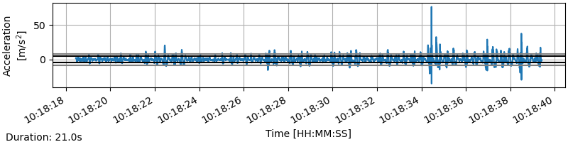
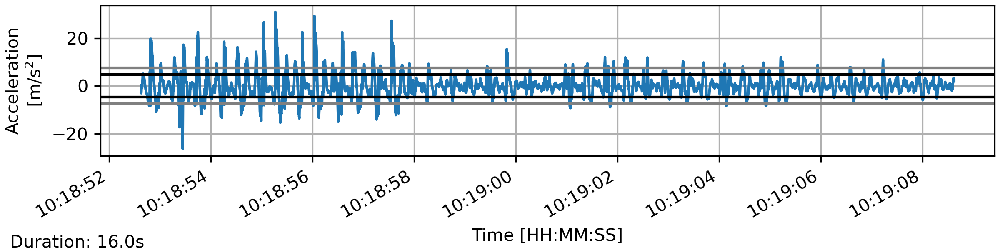
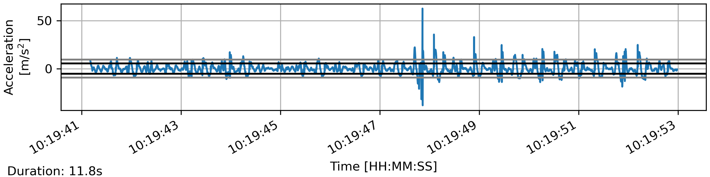
klinkers not in session
pave not in session
stoeptegels not in session
tarmac not in session
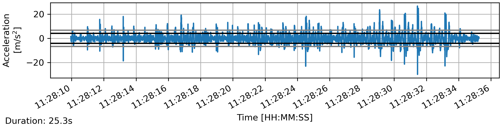
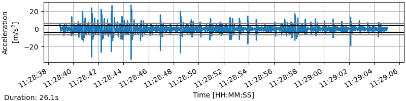
klinkers not in session
pave not in session
stoeptegels not in session
tarmac not in session
aula not in session
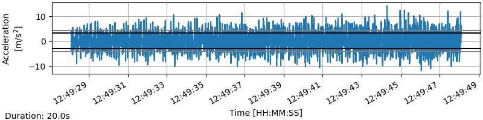
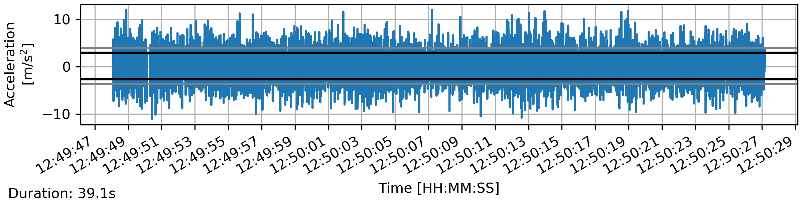
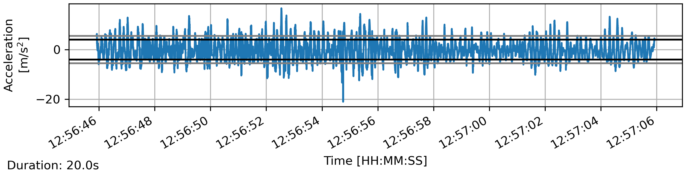
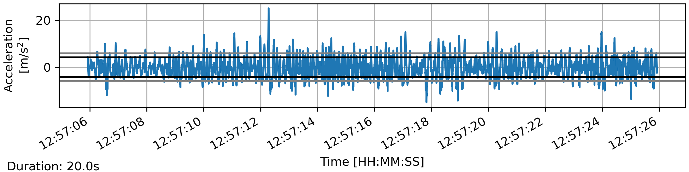
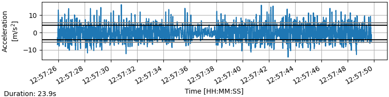
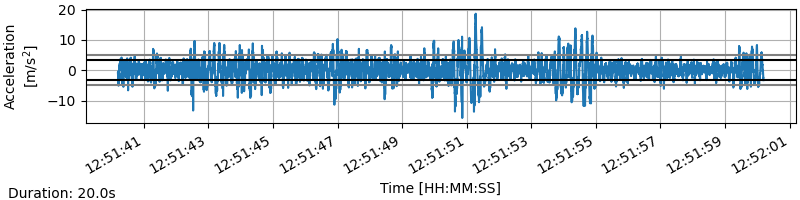
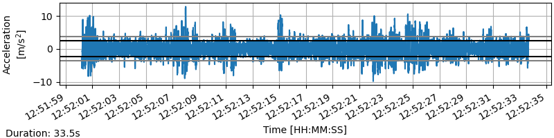
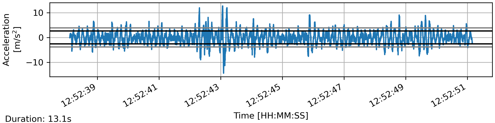
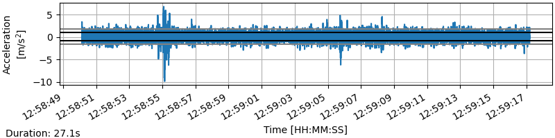
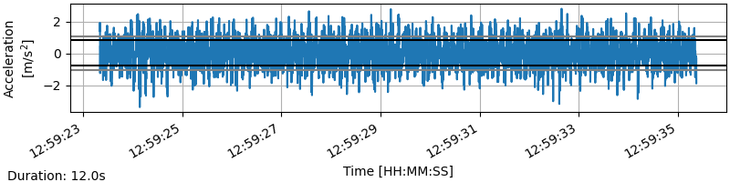
aula not in session
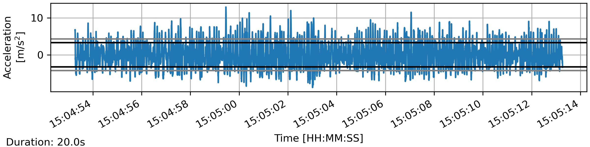
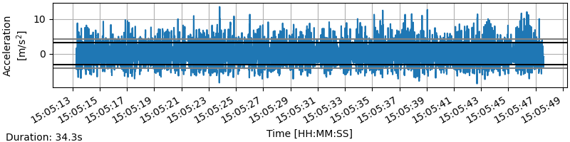
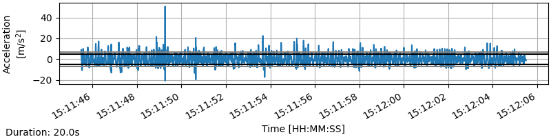
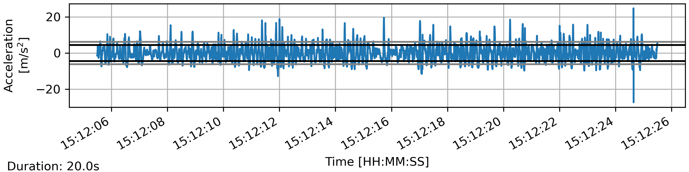
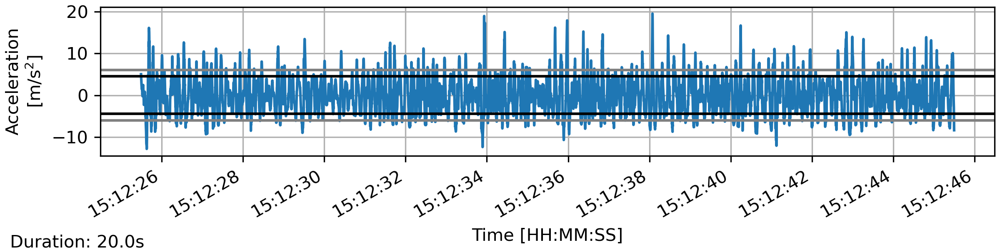
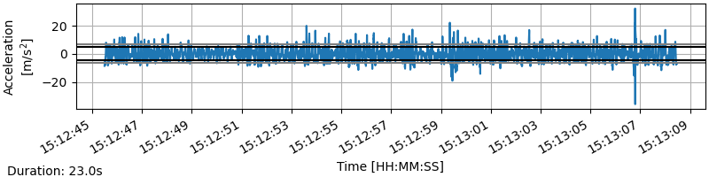
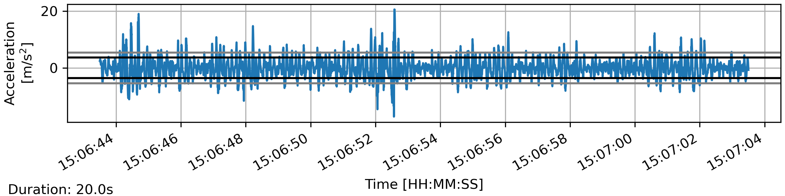
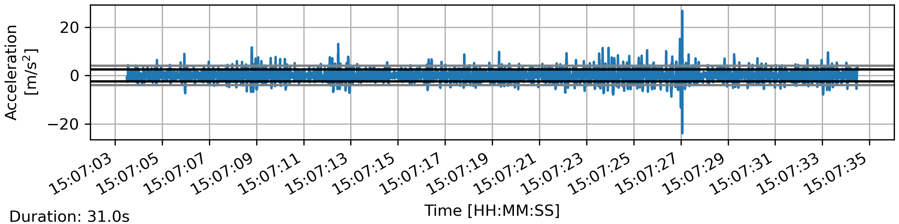
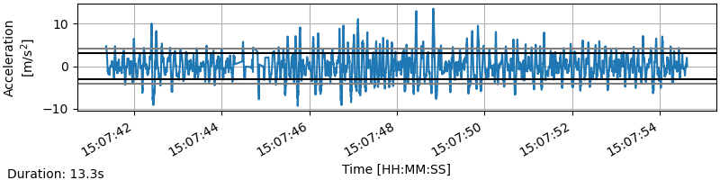
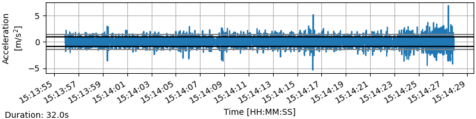
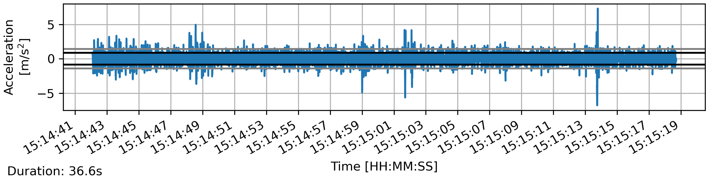
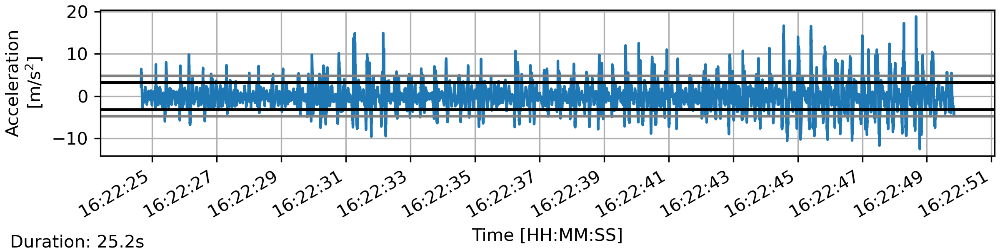
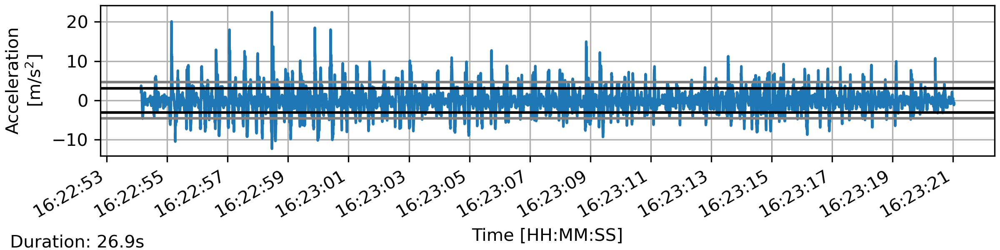
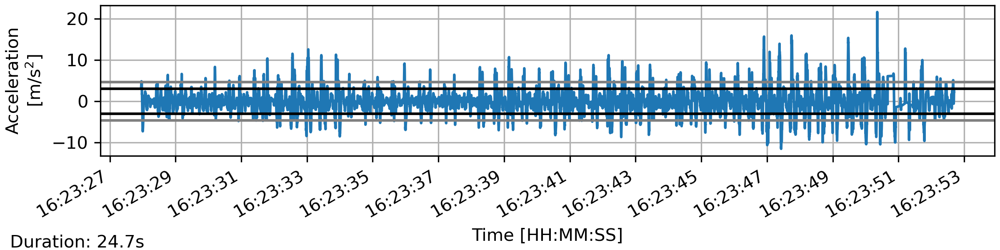
klinkers not in session
pave not in session
stoeptegels not in session
tarmac not in session
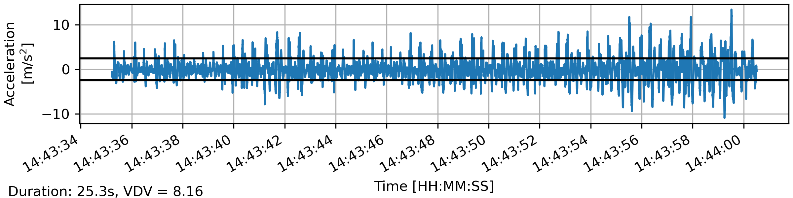
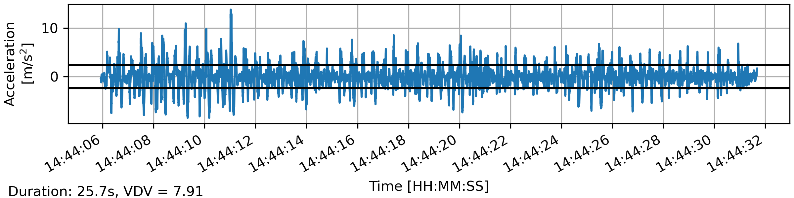
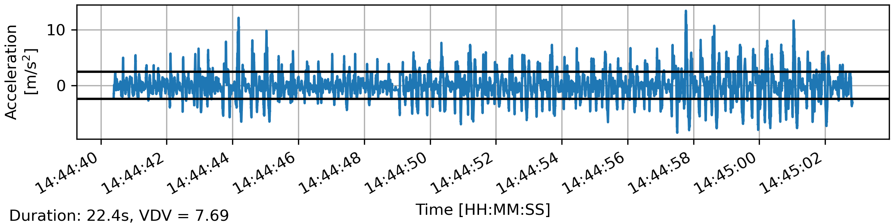
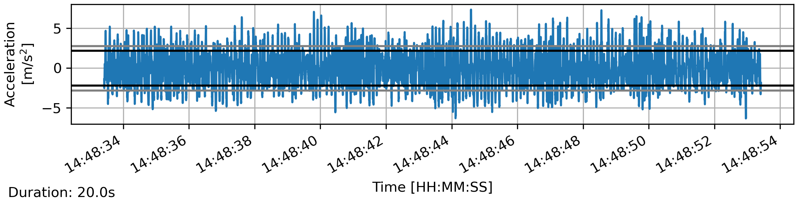
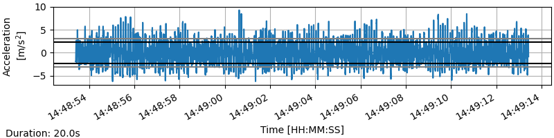
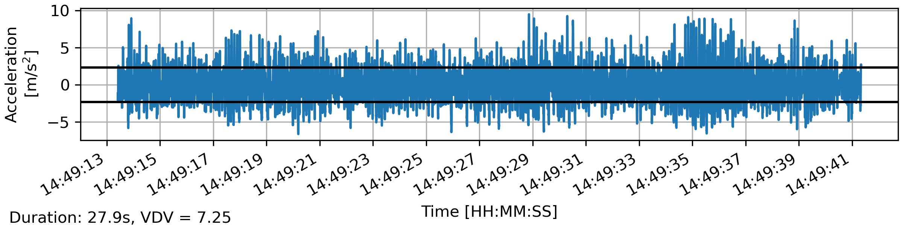
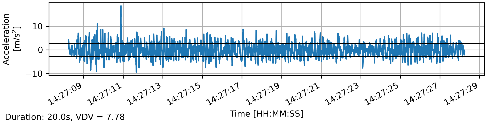
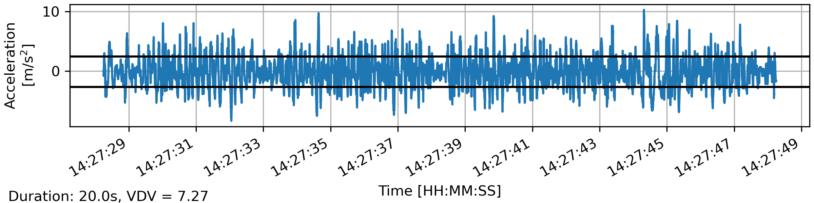
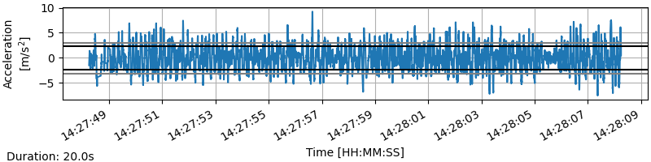
aula not in session
aula not in session
klinkers not in session
pave not in session
stoeptegels not in session
tarmac not in session
aula not in session
klinkers not in session
pave not in session
stoeptegels not in session
tarmac not in session
aula not in session
klinkers not in session
pave not in session
stoeptegels not in session
tarmac not in session
aula not in session
klinkers not in session
pave not in session
stoeptegels not in session
tarmac not in session
aula not in session
klinkers not in session
pave not in session
stoeptegels not in session
tarmac not in session
missing bounds, skipped: session014
aula not in session
klinkers not in session
pave not in session
stoeptegels not in session
aula not in session
pave not in session
stoeptegels not in session
tarmac not in session
missing bounds, skipped: session017
aula not in session
pave not in session
stoeptegels not in session
aula not in session
pave not in session
stoeptegels not in session
aula not in session
pave not in session
stoeptegels not in session
aula not in session
pave not in session
stoeptegels not in session
tarmac not in session
aula not in session
klinkers not in session
pave not in session
stoeptegels not in session
aula not in session
pave not in session
stoeptegels not in session
tarmac not in session
aula not in session
pave not in session
stoeptegels not in session
aula not in session
klinkers not in session
pave not in session
stoeptegels not in session
tarmac not in session
aula not in session
klinkers not in session
pave not in session
stoeptegels not in session
tarmac not in session
aula not in session
pave not in session
stoeptegels not in session
tarmac not in session
klinkers not in session
pave not in session
stoeptegels not in session
tarmac not in session
klinkers not in session
pave not in session
stoeptegels not in session
tarmac not in session
aula not in session
aula not in session
klinkers not in session
pave not in session
stoeptegels not in session
tarmac not in session
aula not in session
aula not in session
klinkers not in session
pave not in session
stoeptegels not in session
tarmac not in session
aula not in session
klinkers not in session
pave not in session
stoeptegels not in session
tarmac not in session
aula not in session
klinkers not in session
pave not in session
stoeptegels not in session
tarmac not in session
aula not in session
klinkers not in session
pave not in session
stoeptegels not in session
tarmac not in session
aula not in session
klinkers not in session
pave not in session
stoeptegels not in session
tarmac not in session
missing bounds, skipped: session014
aula not in session
klinkers not in session
pave not in session
stoeptegels not in session
aula not in session
pave not in session
stoeptegels not in session
tarmac not in session
missing bounds, skipped: session017
aula not in session
pave not in session
stoeptegels not in session
aula not in session
pave not in session
stoeptegels not in session
aula not in session
pave not in session
stoeptegels not in session
aula not in session
pave not in session
stoeptegels not in session
tarmac not in session
aula not in session
klinkers not in session
pave not in session
stoeptegels not in session
aula not in session
pave not in session
stoeptegels not in session
tarmac not in session
aula not in session
pave not in session
stoeptegels not in session
aula not in session
klinkers not in session
pave not in session
stoeptegels not in session
tarmac not in session
aula not in session
klinkers not in session
pave not in session
stoeptegels not in session
tarmac not in session
aula not in session
pave not in session
stoeptegels not in session
tarmac not in session
These plots give the information necessary to determine if the sensor orientations are working correctly. These are time histories of the "static" event (no motion) in each session. The left column shows the raw accelerometer data for each sensor and each body fixed sensor axis. If the background is shaded grey, that axis is the sensor's axis that aligned with the vehicle's lateral axis (pitch axis) and the title on that subplot gives the axis letter (x, y, or z) and the sign (axis points to the left - or right +). The column on the right shows the accelerometer time histories projected on the vehicle's body fixed axes: longitudinal, lateral, and vertical. The vertical axis should show a positive ~10 m/s/s value and the other two should axes should show approximately 0 m/s/s if the rotations are applied correctly. This indicates that the vertical axes has been aligned with gravity.


missing bounds, skipped: session014


missing bounds, skipped: session017


no synchro trial, skipped: session001
no synchro trial, skipped: session002


missing bounds, skipped: session014


missing bounds, skipped: session017